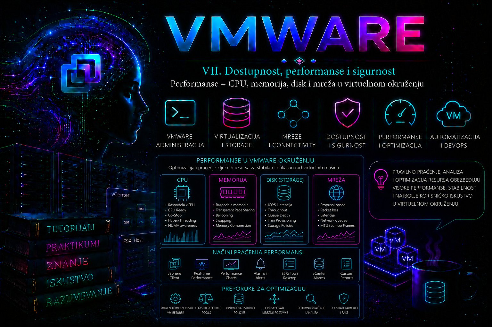

VMware

Napredni tutorijal i praktikum
Performanse VMware okruženja nisu rezultat samo brzine procesora ili storage sistema. One predstavljaju zbir rada VMkernel planera, raspoloživih fizičkih resursa, pravilnog dizajna infrastrukture, raspoređivanja opterećenja pomoću DRS-a, karakteristika storage sistema, mrežne arhitekture i samog operativnog sistema koji radi unutar virtuelne mašine.
Jedna od najčešćih grešaka novih administratora jeste pretpostavka da će dodavanje više vCPU ili više memorije automatski ubrzati virtuelnu mašinu. U praksi je veoma često upravo suprotno — pogrešno dimenzionisana VM može stvarati dodatno opterećenje scheduleru, povećavati CPU Ready vreme, otežavati DRS balansiranje i usporavati ceo klaster. Zvanične smernice za performanse zato insistiraju na rightsizing-u: dodeli onoliko resursa koliko workload dokazano zahteva, uz rezervu koja odgovara njegovom SLA-u i obrascu rasta.
Ova lekcija se neposredno nadovezuje na DRS: DRS može da premesti VM kada proceni da bi drugo mesto poboljšalo ravnotežu klastera, ali ne može da popravi loš SQL plan, pogrešan VM limit, neusklađen MTU ili zasićen storage niz. U narednim lekcijama monitoring, alarmi i sistematičan troubleshooting biće obrađeni kao širi operativni proces; ovde je fokus na tačnom značenju performance metrika i dokazivanju sloja u kome nastaje čekanje.
Administrator zato mora razumeti kako VMkernel raspoređuje CPU vreme, upravlja memorijom, obrađuje disk I/O i mrežni saobraćaj pre nego što uopšte počne optimizaciju performansi.
Performanse kao lanac međusobno povezanih komponenti
Svaki zahtev aplikacije prolazi kroz više slojeva:
- operativni sistem gosta;
- VMware Tools (kada su potrebni određeni servisi);
- virtuelni hardver;
- VMkernel;
- CPU scheduler;
- memory manager;
- storage stack;
- network stack;
- fizički hardver.
Problem može nastati u bilo kom od ovih slojeva. Na primer:
- spor SQL upit nije nužno CPU problem;
- visok CPU može biti posledica storage čekanja;
- velika memorija može prikrivati storage bottleneck;
- mrežni timeout može biti izazvan CPU Ready vremenom.
Zbog toga VMware troubleshooting gotovo nikada ne počinje pretpostavkom već merenjem.
CPU performanse
VMkernel koristi napredni CPU scheduler koji raspoređuje vCPU jezgra virtuelnih mašina na fizička jezgra hosta.
Scheduler mora obezbediti:
- fer raspodelu CPU vremena;
- poštovanje rezervacija;
- ograničenja (Limits);
- Shares prioritete;
- NUMA lokalnost;
- koordinaciju više vCPU iste VM.
Za razliku od fizičkog servera, virtuelna mašina ne dobija trajno određeno jezgro.
Scheduler neprestano odlučuje:
- ko dobija CPU;
- koliko dugo;
- na kom jezgru;
- da li je bolje izvršavanje premestiti na drugo jezgro.
Najvažnije CPU metrike
| Metrika | Značenje | Na šta ukazuje |
|---|---|---|
| Usage | stvarna iskorišćenost CPU | koliko VM zaista koristi CPU |
| Demand | koliko CPU VM želi | potencijalna potreba |
| Ready | čekanje na fizički CPU | konkurencija za fizički CPU, limit ili nepovoljan raspored |
| Co-stop | sinhronizacija više vCPU | teškoće istovremenog napredovanja više vCPU; proveriti veličinu VM-a |
| Latency | ukupno kašnjenje raspoređivanja | scheduler ili resursni problem |
Posebno treba pratiti CPU Ready vreme. Ono označava period kada je virtuelna mašina spremna za izvršavanje, ali VMkernel ne može odmah da joj dodeli fizičko jezgro zbog konkurencije za resurse. Dugotrajno povećanje CPU Ready vremena često ukazuje na prevelik broj vCPU ili preopterećen host.
CPU Ready nije isto što i visok CPU Usage
Ovo je jedna od najvažnijih administratorskih lekcija.
Moguće su sledeće situacije:
| CPU Usage | CPU Ready | Tumačenje |
|---|---|---|
| visok | nizak | VM zaista radi intenzivno |
| nizak | visok | VM čeka CPU |
| visok | visok | VM ima koristan rad, ali istovremeno čeka; proveriti host, limit, vCPU veličinu i NUMA |
| nizak | nizak | nema dokaza o CPU contention-u u posmatranom intervalu; uzrok može biti u drugom sloju |
NUMA i lokalnost memorije
Na serverima sa više CPU socket-a memorija nije jednako udaljena od svih procesora.
NUMA (Non-Uniform Memory Access) omogućava da VM koristi memoriju koja je fizički najbliža procesoru na kome se izvršava.
Ako velika VM prelazi NUMA granice:
- raste memorijska latencija;
- scheduler ima manje slobode;
- performanse mogu opasti.
Zbog toga nije preporučljivo dodeljivati veliki broj vCPU bez stvarne potrebe.
Virtualizacija memorije
ESXi koristi više tehnika upravljanja memorijom kako bi omogućio stabilan rad i kada fizička memorija postane ograničen resurs.
Najvažnije tehnike su:
- Transparent Page Sharing (TPS) — danas ograničen zbog bezbednosnih razloga i primenjuje se drugačije nego u starijim verzijama;
- Memory Ballooning;
- Memory Compression;
- Host Swapping.
VMkernel ove mehanizme koristi postepeno. Cilj je da swapping bude poslednja opcija, jer ima najveći negativan uticaj na performanse.
Balloon Driver
Balloon driver je deo VMware Tools paketa.
Kada host ostane bez slobodne memorije:
- VMkernel aktivira balloon driver.
- Driver "zauzima" memoriju unutar gosta.
- Gost sam odlučuje koje stranice može osloboditi.
- Host preuzima oslobođenu memoriju.
Ovaj postupak je znatno efikasniji od direktnog host swapping-a.
Ako VMware Tools nisu instalirani ili nisu funkcionalni, host nema mogućnost ballooning-a i ranije prelazi na swapping.
Memory Compression
Kada ballooning nije dovoljan, VMkernel pokušava da kompresuje stranice memorije.
Kompresovana memorija:
- ostaje u RAM-u;
- brža je od swap-a;
- smanjuje disk I/O.
Host Swapping
Host swapping predstavlja poslednju zaštitu od potpunog nedostatka memorije.
VMkernel zapisuje stranice memorije na swap fajl.
Posledice:
- veliko povećanje latencije;
- spor odziv aplikacija;
- pad performansi baze podataka;
- spor rad web servera;
- spor rad Active Directory servisa.
Zbog toga trajni rast swap-in/swap-out aktivnosti nije normalan način rada, već dokaz koji zahteva istragu. Uzrok može biti globalni memory pressure, ali i limit konkretne VM; sama činjenica da je swap prostor nekada korišćen nije dovoljna bez stope promene, vremenskog intervala i korelacije sa odzivom.
Storage performanse
Kod storage sistema administrator prvenstveno prati latenciju, a ne samo propusni opseg.
Najvažnije komponente storage puta su:
- VM;
- virtuelni SCSI kontroler;
- VMkernel storage stack;
- HBA ili softverski adapter;
- SAN ili NAS mreža;
- storage kontroler;
- diskovi ili SSD/NVMe uređaji.
Kašnjenje u bilo kom segmentu povećava ukupno vreme odgovora aplikacije. Broadcom preporučuje analizu latencije po slojevima korišćenjem Performance Charts i esxtop alata.
Storage latencije
U esxtop-u se često analiziraju:
- DAVG — Device Latency;
- KAVG — VMkernel Latency;
- GAVG — ukupna latencija.
GAVG/cmd ≈ DAVG/cmd + KAVG/cmdVrednosti su proseci za izabrani interval i sloj storage steka. Zato kratki pik, percentil latencije aplikacije i prosek u esxtop-u nisu ista stvar. Aktuelni Broadcom KB kao signal za istragu navodi održane vrednosti iznad približno 10 ms, ali to nije univerzalni SLA: prihvatljivost zavisi od medijuma, protokola, workload-a i zahteva aplikacije. Važniji su odstupanje od bazne linije, trajanje, redovi i greške nego jedan izolovan broj.
Ako je:
- DAVG visok → problem je uglavnom na storage uređaju;
- KAVG visok → VMkernel ili adapter predstavlja usko grlo;
- GAVG visok → aplikacija oseća veliko ukupno kašnjenje.
Thin i Thick diskovi sa aspekta performansi
Kod modernih storage sistema razlike su uglavnom manje nego ranije, ali administrator mora razumeti način rada.
- Thin provisioning štedi prostor, ali zahteva pažljivo praćenje slobodnog kapaciteta.
- Lazy Zeroed Thick unapred rezerviše prostor.
- Eager Zeroed Thick unapred rezerviše i inicijalizuje blokove, zbog čega je obavezan za određene funkcije poput VMware Fault Tolerance.
Izbor tipa diska treba da bude rezultat zahteva aplikacije, a ne pretpostavke da je jedan format univerzalno najbrži.
Mrežne performanse
Virtuelni mrežni saobraćaj prolazi kroz:
- virtuelni adapter;
- vSwitch ili vDS;
- VMkernel;
- fizički NIC;
- switch infrastrukturu.
Problemi mogu nastati zbog:
- pogrešnog MTU;
- preopterećenog uplink-a;
- neodgovarajuće Load Balancing politike;
- Queue zagušenja;
- packet drop događaja;
- sporog storage over Ethernet saobraćaja.
Praćenje performansi u vSphere Client-u
Administrator ne treba odmah da koristi esxtop.
Prvi korak je analiza Performance Charts.
Najčešće se proveravaju:
- CPU Usage;
- CPU Ready;
- Memory Active;
- Consumed Memory;
- Balloon;
- Swap;
- Disk Latency;
- Datastore Latency;
- Network Throughput;
- Packet Loss.
Napredni grafici i dostupne metrike mogu se razlikovati u zavisnosti od verzije vSphere-a, nivoa prikupljanja statistike i licence.
ESXCLI i komandna linija
ESXCLI nije primarni alat za analizu performansi, ali je važan za proveru konfiguracije.
esxcli hardware cpu listIzvršava se na ESXi hostu.
Prikazuje:
- fizička jezgra;
- socket-e;
- NUMA raspored;
- CPU karakteristike.
Komanda je potpuno bezbedna i ne menja stanje sistema.
esxcli network nic listPrikazuje:
- link status;
- brzinu;
- duplex;
- driver;
- firmware.
Koristi se pri dijagnostici mrežnih performansi i potvrdi da fizički adapter radi očekivanom brzinom.
esxcli storage core device listPrikazuje detaljne informacije o storage uređajima, uključujući tip uređaja, putanje i karakteristike. Ne menja konfiguraciju i bezbedna je za izvršavanje u produkciji.
esxtop – osnovni alat za performanse
Za ozbiljnu dijagnostiku Broadcom i dalje preporučuje esxtop, odnosno resxtop za udaljeno prikupljanje podataka.
esxtopPokreće se direktno na ESXi Shell-u ili preko SSH sesije.
Najvažnije prečice:
- c — CPU;
- m — Memory;
- d — Disk Device;
- u — Disk VM;
- n — Network.
Sam alat ne menja resursnu konfiguraciju već prikazuje statistiku u realnom vremenu. Administrator po potrebi uključuje ili isključuje kolone pomoću tastera f, a za vremenski ograničenu analizu može prikupljati podatke u batch režimu radi kasnijeg pregleda. Ipak, prikupljanje ima CPU i diskovni trošak, pa interval i broj uzoraka moraju biti ograničeni.
Drugi deo – Praktikum, prvi deo
Operativni cilj praktikuma
U ovom delu praktikuma administrator uspostavlja ponovljivu metodologiju za merenje performansi, zatim dijagnostikuje CPU i memorijska uska grla bez oslanjanja na jednu metriku ili unapred formiranu pretpostavku. Vežbe su usmerene na razlikovanje stvarnog nedostatka fizičkih resursa od problema koje izazivaju pogrešno dimenzionisana virtuelna mašina, neodgovarajući resursni limit, NUMA raspored, aplikaciono ponašanje ili kratkotrajni skok opterećenja.
Broadcom preporučuje da se problem performansi posmatra kroz CPU, memoriju, storage i mrežu, jer slab odziv virtuelne mašine može nastati u bilo kom od tih slojeva. Zbog toga je cilj prve vežbe prikupljanje baznog stanja, a ne trenutno menjanje konfiguracije.
Laboratorijska topologija
| Komponenta | Predložena konfiguracija | Namena |
|---|---|---|
| vCenter Server | vCenter Server 8.x ili odgovarajuće podržano izdanje | Centralno upravljanje, istorijske metrike, događaji i alarmi |
| ESXi hostovi | Najmanje dva hosta u klasteru; vežbe su moguće i na jednom laboratorijskom hostu | Poređenje opterećenja i bezbedno premeštanje VM-a kada postoji klaster |
| Klaster | DRS u Manual ili Partially Automated režimu, ako je dostupan | Kontrolisano posmatranje preporuka bez nekontrolisanog menjanja smeštaja VM-a |
| TEST-PERF-01 | Linux VM, 2 vCPU, 4 GB RAM, VMware Tools ili open-vm-tools | Kontrolisano CPU i memorijsko opterećenje |
| TEST-PERF-02 | Linux ili Windows VM, 4 vCPU, 8 GB RAM | Poređenje i simulacija pogrešnog dimenzionisanja |
| Administratorska stanica | PowerShell 7 i aktuelni VCF PowerCLI moduli | Prikupljanje i poređenje istorijskih statistika |
| Monitoring interval | Najmanje 15–30 minuta za laboratoriju; u produkciji reprezentativan poslovni period | Razlikovanje kratkog skoka od trajnog problema |
Komande u praktikumu koriste generičke nazive objekata. Pre izvršavanja zameniti nazive kao što su vcsa.lab.local, esxi01.lab.local, CLUSTER-PROD i TEST-PERF-01 stvarnim laboratorijskim vrednostima.
Verzijske i licencne napomene
- Osnovni Performance Charts, esxtop, ESXCLI i pregled resursa dostupni su nezavisno od DRS automatizacije, ali napredna automatizacija raspoređivanja i pojedine klasterske funkcije zavise od izdanja, pretplate i licenci koje organizacija poseduje.
- Nazivi menija, statističkih brojača i dostupni vremenski intervali mogu se razlikovati između vSphere 7, vSphere 8, novijih izdanja i različitih nivoa statističkog prikupljanja u vCenter Serveru.
- U novijim Broadcom distribucijama PowerCLI se na portalu može pojaviti pod nazivom VCF PowerCLI. Konkretni vSphere cmdlet-i, uključujući
Get-Stat, i dalje se koriste za automatizaciju vSphere okruženja. - ESXi 8.0 može automatski izgraditi virtuelnu CPU topologiju. Ručno menjanje broja cores per socket ne treba koristiti kao univerzalnu optimizaciju niti kao način zaobilaženja licenciranja aplikacije. Dimenzionisanje mora poštovati zahteve gosta, NUMA raspored i licencne uslove proizvođača aplikacije.
Laboratorijska vežba 1 – Uspostavljanje baznog stanja performansi
Cilj vežbe
Cilj je da administrator napravi dokumentovano početno stanje hosta i virtuelnih mašina pre bilo kakve izmene. Bazno stanje služi za poređenje tokom incidenta, nakon nadogradnje, promene resursa, migracije, izmene storage politike ili promene aplikacionog opterećenja.
Bez baznog stanja izraz „sistem je sporiji nego ranije” nije tehnički dokaz. Administrator mora moći da odgovori:
- koji objekat je spor: aplikacija, jedna VM, grupa VM-ova, host, klaster ili datastore;
- u kom periodu se problem pojavljuje;
- da li je promenjen CPU zahtev, memorijski pritisak, storage latencija ili mrežni saobraćaj;
- da li je ponašanje novo ili predstavlja normalan dnevni obrazac;
- koja promena prethodi pojavi simptoma.
Preduslovi
- Administratorski nalog sa pravom čitanja konfiguracije i statistike.
- Ispravno vreme i NTP sinhronizacija na vCenter Serveru, ESXi hostovima i gostujućim sistemima.
- Instalirani i funkcionalni VMware Tools ili open-vm-tools u testnim VM-ovima.
- Poznat period normalnog opterećenja.
- Omogućen SSH samo ako će se koristiti esxtop preko udaljene sesije.
- PowerCLI sesija sa pristupom vCenter Serveru.
Početno stanje
Virtuelne mašine rade bez namerno izazvanog opterećenja. Resursne rezervacije, limiti i shares nisu menjani radi vežbe. DRS, ako postoji, ne sme automatski premeštati testnu VM tokom kratkog mernog intervala bez dokumentovanja migracije, jer bi promena hosta prekinula poređenje host-level brojača.
Upozorenje o riziku
Ova vežba je nedestruktivna. Ipak, uključivanje SSH servisa povećava administrativnu napadnu površinu. U produkciji ga omogućiti samo privremeno, ograničiti pristup upravljačkoj mreži i isključiti nakon prikupljanja podataka. Samo posmatranje statistike ne zahteva restart hosta, VM-a ili servisa.
Korak 1 – Zabeležiti administrativni kontekst
Pre otvaranja grafikona zabeležiti:
- datum, vreme i vremensku zonu;
- prijavljeni simptom;
- početak i trajanje problema;
- pogođene korisnike i aplikacije;
- naziv VM-a, hosta, klastera i datastore-a;
- nedavne promene;
- da li se problem može ponoviti;
- koji poslovni proces je ugrožen.
Ovaj korak sprečava čestu grešku u kojoj administrator odmah traži visoku metriku, a ne zna kada se problem dogodio niti da li posmatra odgovarajući objekat.
Korak 2 – Proveriti opšte stanje VM-a kroz vSphere Client
GUI putanja:
Menu
→ VMs and Templates
→ TEST-PERF-01
→ SummaryProveriti:
- Power State;
- Host na kome VM trenutno radi;
- Guest OS i VMware Tools status;
- dodeljeni vCPU i memoriju;
- alarme i upozorenja;
- trenutni CPU Usage i Memory Usage;
- postoje li snapshot-i;
- datastore na kome se nalaze konfiguracija i VMDK fajlovi.
Početni Summary ekran nije dovoljan za zaključak o performansama. On služi da se brzo prepoznaju očigledni problemi: isključeni VMware Tools, aktivan alarm, neočekivani host, neplanirana promena resursa ili dug lanac snapshot-a.
Korak 3 – Pregledati događaje i nedavne promene
GUI putanja:
TEST-PERF-01
→ Monitor
→ Tasks and Events
→ EventsFiltrirati period koji obuhvata pojavu problema. Tražiti:
- vMotion ili DRS migraciju;
- promenu CPU ili memorijske konfiguracije;
- promenu resource pool-a;
- promenu limita, rezervacije ili shares vrednosti;
- snapshot create, remove ili consolidate operaciju;
- resetovanje ili ponovno pokretanje VM-a;
- promenu virtuelnog mrežnog adaptera;
- Storage vMotion;
- HA restart ili host connectivity događaj.
U praksi je promena neposredno pre pojave problema često vredniji trag od jedne visoke metrike.
Korak 4 – Otvoriti Performance Charts za VM
GUI putanja:
TEST-PERF-01
→ Monitor
→ Performance
→ AdvancedIzabrati odgovarajući vremenski opseg, a zatim pregledati najmanje sledeće grupe:
| Grupa | Brojači koje treba pregledati | Administratorsko pitanje |
|---|---|---|
| CPU | Usage, Usage in MHz, Ready, Demand, Co-stop | Da li VM koristi CPU ili čeka da ga dobije? |
| Memory | Consumed, Active, Granted, Balloon, Compressed, Swapped | Da li je memorija samo dodeljena ili je aktivno potrebna, i postoji li reclamation? |
| Virtual disk | Read/Write latency, Read/Write rate, Commands | Da li gost čeka I/O i da li se to poklapa sa simptomom? |
| Network | Usage, packets transmitted/received, dropped packets gde su dostupni | Da li je zastoj povezan sa mrežnim opterećenjem ili gubicima? |
Raspoloživost brojača zavisi od objekta, statističkog nivoa i izabranog perioda. Real-time prikaz daje detaljnije kratkoročne podatke, dok se istorijski podaci agregiraju. Zbog toga se mali kratkotrajni skok može izgubiti u dnevnom ili nedeljnom proseku. Broadcom dokumentacija za vSphere Monitoring and Performance razlikuje prikaze i alate za praćenje CPU, memorijskih, storage i drugih resursa.
Korak 5 – Pregledati host i klaster, a ne samo VM
GUI putanje:
Hosts and Clusters
→ esxi01.lab.local
→ Monitor
→ Performance
→ AdvancedHosts and Clusters
→ CLUSTER-PROD
→ Monitor
→ PerformanceNa hostu proveriti:
- ukupni CPU Usage i Demand;
- broj aktivnih VM-ova;
- memorijsku potrošnju i reclamation brojače;
- storage latenciju po uređaju i datastore-u;
- mrežni saobraćaj po fizičkom adapteru;
- alarme za CPU, memoriju, datastore i mrežu.
Na klasteru proveriti:
- da li je opterećenje ravnomerno raspoređeno;
- postoji li host sa znatno većim CPU ili memorijskim pritiskom;
- postoje li aktivne DRS preporuke;
- da li affinity pravila sprečavaju bolji raspored;
- da li HA rezervisani kapacitet ograničava raspoložive resurse.
Visok Ready na jednoj VM može biti posledica host-level konkurencije, čak i kada klaster kao celina raspolaže slobodnim kapacitetom. U tom slučaju problem može biti neravnomeran raspored, host affinity pravilo, lokalna zavisnost ili DRS režim, a ne nedostatak ukupnog klasterskog CPU kapaciteta.
Korak 6 – Napraviti PowerCLI inventar početnog stanja
Komande se izvršavaju na administratorskoj stanici sa instaliranim PowerCLI modulima.
Connect-VIServer -Server vcsa.lab.local
$vmName = "TEST-PERF-01"
$vm = Get-VM -Name $vmName
$vm | Select-Object `
Name,
PowerState,
NumCpu,
MemoryGB,
VMHost,
@{N="GuestOS";E={$_.Guest.OSFullName}},
@{N="ToolsStatus";E={$_.ExtensionData.Guest.ToolsStatus}},
@{N="ToolsRunning";E={$_.ExtensionData.Guest.ToolsRunningStatus}}Connect-VIServer uspostavlja sesiju sa vCenter Serverom. Get-VM samo čita objekat, a Select-Object formira pregled ključnih vrednosti. Komande ne menjaju VM. Očekivani rezultat je jedan red sa ispravnim nazivom, hostom, brojem vCPU, memorijom i statusom VMware Tools-a.
Za pregled resursnih postavki:
$vm | Get-VMResourceConfiguration |
Select-Object VM,
CpuReservationMhz,
CpuLimitMhz,
CpuSharesLevel,
MemReservationGB,
MemLimitGB,
MemSharesLevelOva komanda je posebno važna jer VM može imati slab odziv zbog limita iako host nije opterećen. Broadcom dokumentuje slučajeve u kojima CPU ili memorijski limit izazivaju loše performanse, ballooning ili VMkernel swapping i pored slobodnih host resursa.
Očekivani rezultat treba uporediti sa organizacionim standardom. Vrednost limita koja odgovara „Unlimited” može se u PowerCLI prikazu razlikovati u zavisnosti od objekta i verzije. Administrator ne treba da zaključuje samo na osnovu teksta u jednoj koloni, već da rezultat potvrdi u vSphere Client-u.
Korak 7 – Izlistati dostupne statističke brojače
Get-StatType -Entity $vm | Sort-ObjectKomanda se izvršava u PowerCLI sesiji i ne menja stanje. Ona prikazuje koje metrike vCenter trenutno može da vrati za izabrani VM. Ovo je bezbedniji pristup od pretpostavke da je naziv brojača isti u svakoj verziji i na svakom objektu.
Filtriranje po resursu:
Get-StatType -Entity $vm |
Where-Object {
$_ -match "^cpu\." -or
$_ -match "^mem\." -or
$_ -match "^disk\." -or
$_ -match "^net\."
} |
Sort-ObjectKorak 8 – Prikupiti kratkoročni PowerCLI uzorak
$start = (Get-Date).AddMinutes(-30)
$finish = Get-Date
$metrics = @(
"cpu.usage.average",
"cpu.ready.summation",
"mem.usage.average",
"mem.active.average",
"mem.vmmemctl.average",
"mem.swapped.average"
)
Get-Stat -Entity $vm `
-Stat $metrics `
-Start $start `
-Finish $finish |
Select-Object Entity,
MetricId,
Instance,
Timestamp,
Value,
Unit |
Sort-Object Timestamp, MetricIdGet-Stat čita statistiku koju je prikupio vCenter Server. Komanda ne generiše opterećenje unutar VM-a i ne menja konfiguraciju. Ipak, veoma široki upiti nad velikim brojem objekata i dugim periodom mogu nepotrebno opteretiti vCenter bazu i PowerCLI sesiju. U produkciji ograničiti broj objekata, metrika i vremenski opseg.
Ako se dobije greška da metrika nije dostupna:
- pokrenuti
Get-StatType -Entity $vm; - proveriti tačan naziv brojača;
- proveriti da li izabrani period sadrži podatke;
- proveriti nivo statističkog prikupljanja;
- ponoviti upit sa jednom metrikom.
Važna napomena o CPU Ready podacima
U vCenter statistici brojač cpu.ready.summation tipično predstavlja zbir vremena čekanja u milisekundama tokom statističkog intervala. To nije isto što i %RDY prikazan u esxtop-u. Za pravilno poređenje potrebno je znati trajanje intervala i broj vCPU instanci. Ne treba porediti sirovu summation vrednost dve VM različite veličine niti iz različitih intervala bez normalizacije.
Za pojedinačnu instancu vCPU, približna konverzija je:
Ready % = Ready vreme u ms / (interval u sekundama × 1000) × 100Ako je vCenter uzorak 20 sekundi, a Ready summation za jednu vCPU instancu 1.000 ms:
Ready % = 1000 / 20000 × 100 = 5%Pre računanja proveriti kolonu Instance. Agregirana instanca i pojedinačne vCPU instance ne smeju se nekritički sabirati, jer bi se isti podaci mogli dvostruko obračunati.
Korak 9 – Proveriti hardverski kontekst hosta
$hostObj = Get-VMHost -Name "esxi01.lab.local"
$hostObj | Get-VMHostHardware |
Select-Object VMHost,
Manufacturer,
Model,
CpuModel,
CpuCount,
CpuCoreCountTotal,
MhzPerCpu,
MemorySizeGBGet-VMHostHardware vraća hardverske i određene firmware podatke hosta i ne menja sistem. Broadcom PowerCLI referenca ga navodi kao cmdlet za čitanje hardverskih i firmware informacija.
Očekivani rezultat treba da odgovara dokumentovanoj konfiguraciji servera. Neočekivano manji broj jezgara, promenjen CPU model nakon zamene hosta ili smanjena raspoloživa memorija mogu promeniti kapacitet i ponašanje VM-ova.
Korak 10 – Pokrenuti esxtop i snimiti real-time stanje
Na ESXi host se povezati kroz SSH ili otvoriti lokalni ESXi Shell, zatim pokrenuti:
esxtopKomanda samo prikazuje podatke. Ne menja konfiguraciju, ali česta osvežavanja i veoma dugo interaktivno posmatranje nisu zamena za kontrolisano prikupljanje podataka.
U interaktivnom esxtop-u koristiti:
cza CPU prikaz;mza memoriju;dza storage uređaje;uza storage prikaz po VM-u;nza mrežu;fza izbor prikazanih polja;Vza prikaz samo VM world-ova u CPU prikazu, kada je podržano;qza izlaz.
Broadcom esxtop dokumentacija i KB materijali opisuju esxtop kao centralni alat za CPU, memorijsku, mrežnu i storage dijagnostiku.
Korak 11 – Prikupiti batch zapis
esxtop -b -d 5 -n 120 > /tmp/esxtop-baseline.csvParametri imaju sledeće značenje:
-buključuje batch režim;-d 5postavlja interval od pet sekundi;-n 120prikuplja 120 uzoraka;- ukupno trajanje je približno deset minuta;
- rezultat se upisuje u
/tmp/esxtop-baseline.csv.
Komanda ne menja resursne postavke, ali fajl zauzima prostor na ESXi sistemskoj particiji. Ne koristiti neograničeno prikupljanje niti veoma kratak interval tokom dugog perioda. Broadcom u svom primeru za analizu CPU opterećenja koristi batch prikupljanje sa definisanim intervalom i brojem uzoraka, upravo da bi snimanje bilo vremenski ograničeno.
Proveriti da li je fajl nastao:
ls -lh /tmp/esxtop-baseline.csv
head -n 2 /tmp/esxtop-baseline.csvNakon bezbednog preuzimanja na administratorsku stanicu ukloniti laboratorijski fajl:
rm -f /tmp/esxtop-baseline.csvrm je destruktivna komanda. Pre izvršavanja proveriti punu putanju i naziv fajla. Nikada ne koristiti wildcard obrasce u sistemskim direktorijumima bez prethodnog ls pregleda.
Očekivani rezultat
- Dokumentovani su host, VM, resursne postavke i vreme merenja.
- Postoji snimak ključnih vCenter grafikona ili izvezenih statistika.
- Sačuvan je PowerCLI rezultat sa CPU i memorijskim brojačima.
- Napravljen je ograničen esxtop batch zapis.
- Nije menjana konfiguracija VM-a ili hosta.
- Administrator može da opiše normalan raspon ponašanja tokom posmatranog perioda.
Provera uspeha
Vežba je uspešna ako administrator može da odgovori na sledeća pitanja bez ponovnog traženja osnovnih podataka:
- Koliko vCPU i memorije ima testna VM?
- Na kom hostu je radila tokom merenja?
- Da li ima CPU ili memorijski limit?
- Da li su VMware Tools aktivni?
- Da li je VM migrirana tokom perioda?
- Da li postoje ballooning, compression ili swapping vrednosti?
- Da li CPU Usage, Ready i Demand rastu u isto vreme?
- Da li se simptom poklapa sa skokom neke metrike?
Moguće greške i troubleshooting grane
| Simptom | Verovatan uzrok | Bezbedna provera |
|---|---|---|
| Nema istorijskih podataka | Pogrešan vremenski opseg, nedostupan brojač ili statistički nivo | Prebaciti se na real-time prikaz i proveriti Get-StatType |
| PowerCLI vraća više VM-ova | Naziv nije jedinstven | Filtrirati po folderu, datacentru ili koristiti tačan VM objekat |
| SSH pristup ne radi | Servis je isključen, firewall ili mrežna putanja blokira pristup | Proveriti Services i host firewall; ne menjati firewall naslepo |
| esxtop ne prikazuje očekivani VM | VM je migrirana ili ugašena | Proveriti trenutni host i Tasks and Events |
| VMware Tools status nije dobar | Tools servis ne radi ili paket nije instaliran | Proveriti servis u gostu pre zaključka o guest-level podacima |
| CSV fajl je veoma veliki | Previše uzoraka ili prekratak interval | Prekinuti prikupljanje, proveriti veličinu i ponoviti ograničenim parametrima |
Vraćanje laboratorije u početno stanje
- Završiti esxtop tasterom
q. - Preuzeti potrebni CSV fajl.
- Ukloniti privremeni fajl iz
/tmp. - Isključiti SSH servis ako je uključen samo za vežbu.
- Odjaviti PowerCLI sesiju:
Disconnect-VIServer -Server vcsa.lab.local -Confirm:$falseLaboratorijska vežba 2 – CPU contention, CPU Ready i pogrešno dimenzionisana VM
Cilj vežbe
Cilj je da administrator razlikuje:
- visoku legitimnu CPU potrošnju aplikacije;
- čekanje VM-a na fizički CPU;
- problem izazvan prevelikim brojem vCPU;
- problem izazvan CPU limitom;
- kratkotrajni skok od trajnog nedostatka kapaciteta.
Vežba ne pokušava da uspostavi jednu univerzalnu Ready graničnu vrednost. Prihvatljiv nivo zavisi od aplikacije, veličine VM-a, trajanja, SLA zahteva i ponašanja tokom vršnog opterećenja. Broadcom smernice za rightsizing naglašavaju analizu vCPU broja, memorije, NUMA rasporeda i virtuelne CPU topologije, a ne automatsko dodavanje procesora.
Preduslovi
- Završena prva vežba i sačuvano bazno stanje.
- Testna VM koja nije produkciona.
- Pristup gostujućem operativnom sistemu.
- Alat za kontrolisano generisanje CPU opterećenja, na primer
stress-ngna Linux sistemu. - Mogućnost promene broja vCPU nakon planiranog gašenja testne VM.
- Nema aktivnog poslovnog opterećenja na testnom hostu.
Upozorenje o riziku
Generisanje CPU opterećenja izvodi se isključivo u laboratoriji. Ne pokretati nekontrolisan broj worker procesa na produkcionom hostu. Ne simulirati contention na hostu koji nosi vCenter Server, kritične DNS, Active Directory, storage kontrolere, mrežne servise ili druge infrastrukturne VM-ove.
Početno stanje
- TEST-PERF-01 ima 2 vCPU i 4 GB RAM.
- CPU limit je Unlimited.
- Nema CPU rezervacije.
- Shares su Normal.
- VM je na poznatom hostu.
- CPU Usage i Ready su prethodno zabeleženi.
Korak 1 – Potvrditi početnu resursnu konfiguraciju
GUI putanja:
TEST-PERF-01
→ Actions
→ Edit Settings
→ Virtual Hardware
→ CPUProveriti:
- broj vCPU;
- cores per socket, ako se prikazuje;
- CPU reservation;
- CPU limit;
- CPU shares;
- CPU Hot Add status u VM Options, ako je relevantan.
Ne menjati ništa u ovom koraku.
PowerCLI provera:
Connect-VIServer vcsa.lab.local
$vm = Get-VM -Name "TEST-PERF-01"
$vm | Select-Object Name, NumCpu, MemoryGB, VMHost
$vm | Get-VMResourceConfiguration |
Select-Object VM,
CpuReservationMhz,
CpuLimitMhz,
CpuSharesLevelKorak 2 – Generisati kontrolisano CPU opterećenje
Na Ubuntu ili drugom Debian-baziranom laboratorijskom gostu, ako stress-ng nije instaliran:
sudo apt update
sudo apt install stress-ngInstalacija menja gostujući sistem, ali ne menja ESXi konfiguraciju. U izolovanoj laboratoriji bez pristupa repozitorijumu koristiti unapred odobren paket ili postojeći alat. Ne preuzimati neproverene binarne fajlove.
Pokrenuti opterećenje sa dva CPU worker procesa i automatskim prekidom nakon pet minuta:
stress-ng --cpu 2 --timeout 300s --metrics-briefVažni parametri:
--cpu 2pokreće dva CPU worker procesa;--timeout 300sgarantuje završetak nakon pet minuta;--metrics-briefprikazuje sažetak izvršavanja.
Očekuje se visok CPU Usage unutar gosta i na nivou VM-a. Ako host ima slobodan CPU kapacitet, CPU Ready može ostati nizak. To je primer legitimnog intenzivnog rada, a ne nužno problem virtualizacije.
Korak 3 – Pratiti CPU podatke u vSphere Client-u
GUI putanja:
TEST-PERF-01
→ Monitor
→ Performance
→ Advanced
→ CPUPrikazati:
- Usage;
- Demand;
- Ready;
- Co-stop;
- Run, ako je dostupan u izabranom prikazu.
Istovremeno otvoriti host CPU grafikon:
esxi01.lab.local
→ Monitor
→ Performance
→ Advanced
→ CPUTumačenje:
- visok Usage i nizak Ready: VM dobija CPU i izvršava posao;
- visok Demand, ali ograničen Usage: proveriti limit ili contention;
- rast Ready na više VM-ova: proveriti host-level konkurenciju;
- rast Co-stop kod široke VM: proveriti da li joj je dodeljeno više vCPU nego što opterećenje može efikasno da koristi;
- visok host Usage bez odgovarajućeg poslovnog opterećenja: identifikovati VM ili host world koji troši CPU.
Korak 4 – Pratiti VM kroz esxtop
Na ESXi hostu pokrenuti:
esxtopPritisnuti c, zatim po potrebi f i uključiti polja:
%USED;%RUN;%RDY;%CSTP;%WAIT;%IDLE;%MLMTD, kada je dostupno;NWLD;GIDili identifikatore VM world-ova.
Važno tumačenje:
%RDYpokazuje vreme tokom kog je world bio spreman, ali nije dobio fizički CPU;%CSTPukazuje na čekanje povezano sa zajedničkim raspoređivanjem vCPU-ova iste VM;%MLMTDukazuje na vreme u kom je VM bila spremna za rad, ali je zaustavljena zbog konfigurisanog CPU limita;%WAITuključuje različita čekanja i ne sme se samostalno tumačiti kao CPU problem;%IDLEje deo wait vremena za vCPU world i pokazuje da gost nema posao za taj vCPU.
Broadcom posebno upozorava da %WAIT obuhvata više stanja, uključujući idle i određena I/O čekanja, dok %SWPWT predstavlja čekanje povezano sa VMkernel swapping-om.
Korak 5 – Napraviti kontrolisani contention samo u izolovanoj laboratoriji
Ovaj korak se preskače ako laboratorijski host nosi bilo koji kritičan servis.
Na nekoliko namenski kreiranih testnih VM-ova pokrenuti vremenski ograničeno opterećenje. Na svakoj VM broj worker procesa ne treba da prelazi broj njenih vCPU:
stress-ng --cpu 2 --timeout 180s --metrics-briefPosmatrati:
- host CPU Usage;
- Ready na TEST-PERF-01;
- Ready na drugim VM-ovima;
- DRS preporuke, ako je DRS dostupan;
- da li se usporenje javlja samo na jednom hostu.
Bezbednija alternativa veštačkom contention-u jeste analiza postojećeg perioda vršnog laboratorijskog opterećenja ili prethodno snimljenog esxtop zapisa. U produkciji se contention ne izaziva radi testiranja.
Korak 6 – Proveriti da li je uzrok prevelika VM
TEST-PERF-02 sa 4 vCPU koristi se za poređenje. Pokrenuti workload koji koristi samo jednu ili dve niti, a zatim posmatrati:
- da li su neki vCPU uglavnom idle;
- da li je prosečan Usage nizak, ali VM ima Ready;
- da li se pojavljuje Co-stop;
- da li VM prelazi NUMA granicu hosta;
- da li aplikacija uopšte može da koristi sve dodeljene vCPU.
Broj vCPU ne smanjuje se samo zato što je prosečna potrošnja niska. Pre rightsizing odluke proveriti:
- vršne periode;
- broj aplikacionih niti;
- SLA i maksimalno dozvoljeno trajanje posla;
- ponašanje tokom backup-a, batch obrade i održavanja;
- NUMA veličinu hosta;
- zahteve i podršku proizvođača aplikacije;
- licenciranje po socket-u, core-u ili vCPU-u.
Korak 7 – Planirano smanjenje broja vCPU
Ovaj korak se izvodi samo na TEST-PERF-02 i tek nakon dokumentovanog početnog stanja.
Za pouzdano smanjenje vCPU planirati gašenje VM-a. CPU Hot Add uglavnom omogućava dodavanje, ali ne treba pretpostaviti da podržava uklanjanje vCPU tokom rada. Podrška zavisi od gosta, virtuelnog hardvera i konkretne konfiguracije.
GUI postupak:
- Zaustaviti testni workload.
- U gostu izvršiti uredno gašenje operativnog sistema.
- Potvrditi da je VM u stanju Powered Off.
- Otvoriti Actions → Edit Settings → Virtual Hardware → CPU.
- Smanjiti broj sa 4 vCPU na 2 vCPU.
- Ne menjati istovremeno CPU limit, shares ili reservation.
- Sačuvati konfiguraciju.
- Pokrenuti VM.
- Potvrditi da gost vidi očekivani broj procesora.
- Ponoviti isti workload i isti period merenja.
PowerCLI alternativa nakon urednog gašenja:
$vm = Get-VM -Name "TEST-PERF-02"
if ($vm.PowerState -ne "PoweredOff") {
throw "VM mora biti uredno ugašena pre smanjenja broja vCPU."
}
Set-VM -VM $vm -NumCpu 2 -Confirm:$falseSet-VM menja konfiguraciju VM-a. Ovo je state-changing komanda i zahteva change zapis, proveru kompatibilnosti i plan vraćanja. U produkciji ne koristiti -Confirm:$false dok procedura nije testirana i dok objekat nije jednoznačno identifikovan.
Očekivani rezultat nije nužno manji CPU Usage procenat. Sa manjim brojem vCPU, procenat potrošnje može porasti jer isti workload koristi veći deo manjeg dodeljenog kapaciteta. Važniji pokazatelji su:
- trajanje aplikacionog posla;
- odziv korisnika;
- CPU Ready;
- Co-stop;
- host-level contention;
- stabilnost tokom vršnog opterećenja.
Korak 8 – Simulirati pogrešan CPU limit
Ovaj korak je namenjen isključivo laboratoriji. CPU limit može usporiti VM čak i kada host ima mnogo slobodnog kapaciteta.
Pre izmene zabeležiti početnu konfiguraciju:
$vm = Get-VM -Name "TEST-PERF-01"
$before = $vm | Get-VMResourceConfiguration
$before | Format-List *GUI putanja:
TEST-PERF-01
→ Actions
→ Edit Settings
→ Virtual Hardware
→ CPU
→ LimitPostaviti laboratorijski limit koji je dovoljno nizak da se efekat primeti, ali ne toliko nizak da gost izgubi administrativni odziv. Vrednost mora biti prilagođena brzini host procesora i veličini VM-a. Ne postoji jedna univerzalna MHz vrednost za svaki host.
Pokrenuti isti workload:
stress-ng --cpu 2 --timeout 180s --metrics-briefPosmatrati:
- da li CPU Demand ostaje visok;
- da li CPU Usage prestaje da raste na očekivani nivo;
- da li raste
%MLMTDu esxtop-u; - da li host i dalje ima slobodnog CPU kapaciteta;
- da li Ready ostaje relativno nizak dok VM ipak radi sporo.
Ovo je ključni dijagnostički obrazac: VM može biti usporena sopstvenim limitom bez opšteg host contention-a. Broadcom dokumentuje negativan uticaj CPU i memorijskih limita upravo u takvim situacijama.
Korak 9 – Bezbedno ukloniti testni limit
U GUI vratiti CPU Limit na Unlimited.
PowerCLI sintaksa za promenu resursne konfiguracije mora se proveriti prema verziji modula i tačnom tipu objekta pre izvršavanja. U ovoj laboratoriji je preporučeno vraćanje kroz GUI, jer jasno prikazuje vrednost Unlimited i smanjuje rizik pogrešnog tumačenja jedinice.
Nakon vraćanja:
- ponoviti workload;
- proveriti da
%MLMTDviše ne raste zbog limita; - uporediti vreme završetka testa;
- potvrditi da nema nove greške ili alarma;
- dokumentovati pre i posle rezultate.
Logovi i događaji za CPU incident
CPU contention se prvenstveno potvrđuje metrikama, a ne očekivanjem jasne greške u logu. Ipak, logovi pomažu da se pronađu promene, migracije, restarti i infrastrukturni događaji.
| Lokacija | Komponenta | Šta se traži | Primer pregleda |
|---|---|---|---|
/var/log/hostd.log |
ESXi host management agent | Promene VM konfiguracije, power operacije, zadaci i greške upravljanja | grep -iE "TEST-PERF-01|reconfig|power" /var/log/hostd.log | tail -n 100 |
/var/log/vpxa.log |
vCenter agent na ESXi hostu | Komunikacija sa vCenterom, zadaci i upravljački događaji | grep -iE "error|warning|TEST-PERF" /var/log/vpxa.log | tail -n 100 |
/var/log/vmkernel.log |
VMkernel | Hardverski, NUMA, scheduling i drugi kernel-level događaji; ne očekuje se zapis za svaki Ready skok | grep -iE "cpu|numa|warning|error" /var/log/vmkernel.log | tail -n 100 |
VM folder: vmware.log |
VMX proces konkretne VM | Virtuelni hardver, power ciklus, promene konfiguracije i VMX upozorenja | grep -iE "vcpu|numa|warning|error" /vmfs/volumes/DATASTORE/VM/vmware.log | tail -n 100 |
Prilikom filtriranja koristiti stvarnu putanju i naziv VM-a. Ne pretpostavljati da je direktorijum identičan display name-u VM-a. Putanju proveriti kroz VM Summary, datastore browser ili odgovarajući CLI prikaz.
Sistematična troubleshooting grana za CPU problem
- Potvrditi simptom: izmeriti aplikacioni odziv ili trajanje zadatka.
- Odrediti obim: jedna VM, više VM-ova na hostu ili ceo klaster.
- Proveriti promene: vCPU, limit, shares, reservation, migracija ili update.
- Proveriti gosta: procesi, broj niti, load average, Windows Processor Queue i aplikacioni logovi.
- Proveriti VM: Usage, Demand, Ready, Co-stop i limit.
- Proveriti host: ukupni Usage, Ready drugih VM-ova i raspoloživi kapacitet.
- Proveriti klaster: DRS preporuke, affinity pravila i neravnomeran raspored.
- Potvrditi uzrok: ponoviti isti test nakon samo jedne kontrolisane izmene.
- Validirati oporavak: uporediti iste metrike i aplikaciono vreme.
- Dokumentovati: uzrok, izmenu, rezultat i plan daljeg kapaciteta.
Očekivani rezultat
Administrator mora moći da demonstrira najmanje tri različita CPU obrasca:
| Obrazac | Tipični nalaz | Zaključak |
|---|---|---|
| Legitimno CPU opterećenje | Visok Usage, visok Demand, nizak ili prihvatljiv Ready | VM dobija CPU i izvršava posao |
| Host contention | Rast Ready na više VM-ova, visok host Usage | VM-ovi čekaju fizički CPU |
| CPU limit | Visok Demand, ograničen Usage, rast %MLMTD, host ima slobodan kapacitet | VM je usporena sopstvenom politikom |
Vraćanje laboratorije u početno stanje
- Zaustaviti sve
stress-ngprocese ili sačekati timeout. - Vratiti CPU Limit na Unlimited.
- Vratiti TEST-PERF-02 na početni broj vCPU samo ako je to deo definisanog laboratorijskog rollback-a.
- Potvrditi da VM-ovi normalno odgovaraju.
- Proveriti da nema aktivnog CPU alarma.
- Sačuvati rezultate pre i posle izmene.
- Zatvoriti SSH ako više nije potreban.
Laboratorijska vežba 3 – Memory pressure, ballooning, compression, swapping i pogrešan memorijski limit
Cilj vežbe
Cilj je da administrator razlikuje:
- veliku dodeljenu memoriju od stvarno aktivne memorije;
- normalnu memorijsku potrošnju gosta od host memory pressure-a;
- ballooning od host swapping-a;
- memorijski problem gosta od problema ESXi hosta;
- nedostatak kapaciteta od pogrešno postavljenog memorijskog limita;
- kratkotrajnu reclamation aktivnost od trajnog degradiranog stanja.
ESXi koristi više mehanizama za upravljanje memorijom, uključujući ballooning, memory sharing, compression i swapping. Oni ne predstavljaju jednako ozbiljna stanja i moraju se tumačiti u kontekstu host pritiska i aplikacionog odziva.
Preduslovi
- TEST-PERF-01 sa 4 GB ili više dodeljene memorije.
- Ispravni VMware Tools ili open-vm-tools.
- Sačuvano početno stanje memorijskih metrika.
- Alat za kontrolisanu alokaciju memorije.
- Izolovani laboratorijski host ili dovoljan rezervni kapacitet.
- Administratorski pristup gostu i vCenter Serveru.
Upozorenje o riziku
Namerno stvaranje ozbiljnog host memory pressure-a može ugroziti sve VM-ove na hostu. U ovoj vežbi se prvenstveno koristi kontrolisana guest-level alokacija i privremeni limit na testnoj VM. Ne pokretati veliki broj memorijskih worker-a na više VM-ova, ne puniti host do stanja bez slobodne memorije i ne izazivati swapping na produkcionom sistemu.
Korak 1 – Proveriti početne memorijske postavke
GUI putanja:
TEST-PERF-01
→ Actions
→ Edit Settings
→ Virtual Hardware
→ MemoryProveriti:
- konfigurisanu memoriju;
- reservation;
- limit;
- shares;
- Memory Hot Plug status, ako je relevantan;
- da li je VM u resource pool-u sa dodatnim ograničenjima.
PowerCLI:
Connect-VIServer vcsa.lab.local
$vm = Get-VM -Name "TEST-PERF-01"
$vm | Select-Object Name, MemoryGB, VMHost
$vm | Get-VMResourceConfiguration |
Select-Object VM,
MemReservationGB,
MemLimitGB,
MemSharesLevelKomande samo čitaju konfiguraciju.
Korak 2 – Zabeležiti ključne memorijske metrike
GUI putanja:
TEST-PERF-01
→ Monitor
→ Performance
→ Advanced
→ MemoryPrikazati, gde su dostupni:
- Granted;
- Consumed;
- Active;
- Balloon;
- Compressed;
- Swapped;
- Swap in i Swap out rate;
- Overhead;
- Usage.
Tumačenje:
- Configured memory je veličina koju administrator dodeljuje VM-u.
- Granted predstavlja memoriju koju je ESXi dao VM-u.
- Consumed približno pokazuje host fizičku memoriju koju VM zauzima, uključujući relevantan overhead i uz efekte deljenja gde se primenjuju.
- Active je procena nedavno aktivno korišćene memorije, a ne precizna zamena za metrike unutar gosta.
- Balloon pokazuje memoriju povraćenu preko balloon driver-a.
- Compressed pokazuje stranice zadržane u kompresovanom obliku u memoriji.
- Swapped pokazuje memoriju koju je VMkernel prebacio na disk.
Veliki Consumed uz mali Active nije automatski dokaz da VM treba odmah smanjiti. Active je procena i može potceniti povremeno korišćene radne skupove, cache i vršno opterećenje. Rightsizing odluka zahteva istoriju i poznavanje aplikacije.
Korak 3 – Proveriti VMware Tools i balloon driver
Na Linux gostu:
systemctl status open-vm-tools --no-pager
lsmod | grep -i balloon
vmware-toolbox-cmd -vU zavisnosti od distribucije, moduli i način prikaza mogu se razlikovati. Odsustvo očekivanog reda u lsmod izlazu nije samo po sebi dovoljan dokaz da integracija ne radi; proveriti podržanu implementaciju za konkretni kernel, open-vm-tools paket i verziju gosta.
Na Windows gostu proveriti:
- VMware Tools servis;
- Device Manager i VMware Balloon driver, gde je vidljiv;
- Application i System event log;
- Memory Available MBytes, Committed Bytes i Pages/sec brojače.
Ako VMware Tools nisu funkcionalni, ESXi može izgubiti preferirani ballooning mehanizam i ranije koristiti druge metode reclamation-a. To ne znači da administrator treba da restartuje Tools servis bez provere aplikacionog uticaja i change procedure.
Korak 4 – Generisati bezbedno ograničeno memorijsko opterećenje unutar gosta
Na testnom Linux gostu sa 4 GB RAM pokrenuti kontrolisanu alokaciju, na primer 1 GB, uz timeout:
stress-ng --vm 1 --vm-bytes 1G --vm-keep --timeout 180s --metrics-briefParametri:
--vm 1pokreće jedan memorijski worker;--vm-bytes 1Godređuje ciljnu količinu memorije;--vm-keepzadržava mapiranje umesto stalnog ponovnog kreiranja;--timeout 180sprekida test nakon tri minuta.
Vrednost 1G je samo laboratorijski primer. Mora se prilagoditi raspoloživoj memoriji gosta. Ne alocirati gotovo svu memoriju jer gost može aktivirati OOM killer, izgubiti SSH odziv ili prekinuti važne procese.
U gostu paralelno pratiti:
free -m
vmstat 1
topOčekuje se rast guest-level potrošnje. Na hostu ne mora doći do ballooning-a ili swapping-a ako postoji dovoljno fizičke memorije. To je važna pouka: visoka memorijska potrošnja unutar gosta nije isto što i ESXi memory contention.
Korak 5 – Pratiti memoriju kroz esxtop
Na hostu:
esxtopPritisnuti m, zatim proveriti relevantna polja:
MEMSZ;GRANT;ACTV;MCTLSZ;SWCUR;SWR/siSWW/s;ZIPili compression pokazatelje, u zavisnosti od verzije;- host memory state.
Administratorsko tumačenje:
- rast
ACTVbezMCTLSZiSWCUR: VM koristi memoriju, ali host nije pod reclamation pritiskom; - rast
MCTLSZ: balloon driver vraća memoriju hostu; - rast
SWCURi aktivan swap I/O: host koristi VMkernel swap i postoji veći rizik za performanse; - povremena nenulta kumulativna swap vrednost bez trenutnog swap I/O nije isto što i aktivno, trajno swapping stanje;
- memorijski problem mora se povezati sa aplikacionim simptomom i vremenom njegovog nastanka.
Korak 6 – Simulirati pogrešan memorijski limit
Ovaj korak se izvodi isključivo na testnoj VM. Pre izmene sačuvati konfiguraciju:
$vm = Get-VM -Name "TEST-PERF-01"
$beforeMemory = $vm | Get-VMResourceConfiguration
$beforeMemory | Format-List *GUI putanja:
TEST-PERF-01
→ Actions
→ Edit Settings
→ Virtual Hardware
→ Memory
→ LimitPostaviti privremeni limit niži od konfigurisane memorije, ali dovoljno visok da gost ostane administrativno dostupan. Na primer, kod laboratorijske VM sa 4 GB RAM može se koristiti kontrolisana vrednost u skladu sa minimalnim zahtevima operativnog sistema. Ne koristiti nasumičnu vrednost i ne spuštati limit ispod minimuma potrebnog za stabilan rad gosta.
Nakon primene:
- ponoviti isti memorijski workload;
- posmatrati Balloon, Compressed i Swapped;
- proveriti da li host ima slobodnu memoriju;
- proveriti guest-level swap ili paging;
- izmeriti odziv aplikacije ili trajanje kontrolnog zadatka.
Važan dijagnostički obrazac jeste pojava reclamation-a na konkretnoj VM zbog njenog limita čak i kada host nije globalno pod pritiskom. Broadcom navodi da memorijski limit može dovesti do ballooning-a i VMkernel swapping-a uprkos raspoloživim host resursima.
Korak 7 – Razlikovati guest swapping od VMkernel swapping-a
| Vrsta | Gde nastaje | Kako se proverava | Šta znači |
|---|---|---|---|
| Guest OS swap ili paging | Unutar operativnog sistema gosta | vmstat, free, Windows Performance Monitor |
Gost sam upravlja svojim radnim skupom i page fajlom |
| Ballooning | Koordinacija ESXi i balloon driver-a u gostu | vCenter Balloon metrika, esxtop MCTLSZ |
ESXi traži od gosta da oslobodi memoriju na informisaniji način |
| VMkernel swapping | Na ESXi hostu | vCenter Swapped, esxtop SWCUR, swap read/write rate |
ESXi prebacuje VM memorijske stranice na disk; veći rizik od latencije |
| Memory compression | Na ESXi hostu | Compression metrike u vCenteru i esxtop-u | Pokušaj da se izbegne skuplji disk swap zadržavanjem kompresovanih stranica u RAM-u |
Guest swap i host swap mogu postojati istovremeno. Administrator zato mora prikupiti podatke i iz gosta i sa ESXi hosta. Sam pogled na free ili Windows Task Manager nije dovoljan za zaključak o host memory pressure-u.
Korak 8 – Ukloniti limit i validirati oporavak
U vSphere Client-u vratiti Memory Limit na Unlimited.
Zatim:
- zaustaviti workload;
- sačekati da se sistem stabilizuje;
- ponoviti isti test bez limita;
- uporediti Balloon, Compression, Swap i aplikacioni odziv;
- proveriti da li su host i VM alarmi očišćeni;
- ne očekivati da sve kumulativne vrednosti odmah postanu nula;
- fokusirati se na prestanak aktivnog swap I/O i oporavak performansi.
Relevantni logovi za memorijski incident
| Lokacija | Komponenta | Šta tražimo | Primer komande |
|---|---|---|---|
/var/log/vmkernel.log |
VMkernel | Memorijska upozorenja, sistemski pritisak i povezani kernel događaji | grep -iE "memory|swap|balloon|compression|warning" /var/log/vmkernel.log | tail -n 150 |
/var/log/hostd.log |
Host management agent | Promena memorijske konfiguracije, limit, reconfigure zadatak | grep -iE "TEST-PERF-01|memory|reconfig" /var/log/hostd.log | tail -n 150 |
vmware.log u direktorijumu VM-a |
VMX proces | Promene virtuelnog hardvera, rezervacije, power ciklus i VMX upozorenja | grep -iE "memory|memsize|numa|warning|error" vmware.log | tail -n 150 |
| Linux journal | Gostujući operativni sistem | OOM killer, prekid procesa, swap i servisne greške | journalctl -k --since "-30 min" | grep -iE "oom|out of memory|killed process|swap" |
| Windows System/Application log | Gostujući Windows | Resource exhaustion, page file i aplikacioni događaji | Event Viewer ili odobren PowerShell upit |
Nenalaženje poruke u logu ne dokazuje da memory pressure nije postojao. Performance problem može biti vidljiv prvenstveno kroz metrike, dok logovi služe za potvrdu promene, greške ili posledice kao što je OOM događaj.
Sistematična troubleshooting grana za memorijski problem
- Potvrditi simptom: aplikacioni odziv, timeout, guest paging ili prekid procesa.
- Odrediti obim: jedna VM, više VM-ova na hostu ili ceo klaster.
- Proveriti promene: RAM, limit, reservation, resource pool, migracija ili novi workload.
- Proveriti gosta: dostupna memorija, cache, swap, paging, OOM i najveći procesi.
- Proveriti VMware Tools: da li je balloon mehanizam funkcionalan.
- Proveriti VM metrike: Active, Consumed, Balloon, Compressed, Swapped i swap rate.
- Proveriti host: memorijsko stanje, reclamation na drugim VM-ovima i raspoloživi kapacitet.
- Proveriti politike: VM limit, reservation i parent resource pool ograničenja.
- Potvrditi uzrok: ukloniti jednu pogrešnu postavku i ponoviti isti test.
- Validirati oporavak: prestanak aktivnog swap I/O, stabilan odziv i odsustvo novih alarma.
Očekivani rezultat
Administrator treba da prepozna sledeće obrasce:
| Obrazac | Nalaz | Zaključak |
|---|---|---|
| Normalna velika potrošnja gosta | Rastu Active i Consumed, bez Balloon i aktivnog Swap I/O | VM koristi memoriju, ali host nema reclamation problem |
| Kontrolisani ballooning | Raste Balloon/MCTLSZ, Tools rade | ESXi pokušava da povrati memoriju preko gosta |
| Ozbiljniji host pressure | Compression i aktivan VMkernel swap I/O, degradiran odziv | Kapacitet ili raspored zahtevaju korekciju |
| Pogrešan memorijski limit | Reclamation na jednoj VM dok host ima slobodnu memoriju | Politika ograničava VM, a ne fizički host |
| Guest-only problem | Guest paging ili OOM bez host ballooning-a i swapping-a | Problem je pre svega unutar operativnog sistema ili aplikacije |
Vraćanje laboratorije u početno stanje
- Zaustaviti sve memorijske testove.
- Vratiti Memory Limit na Unlimited.
- Vratiti početnu rezervaciju i shares vrednosti ako su menjane.
- Proveriti da nema zaostalih
stress-ngprocesa:
pgrep -a stress-ng- Proveriti guest swap i raspoloživu memoriju.
- Potvrditi da je VM administrativno dostupna.
- Pregledati vCenter alarme i događaje.
- Sačuvati pre i posle rezultate.
- Ukloniti alat za opterećenje ako organizaciona pravila ne dozvoljavaju da ostane instaliran.
Kontrolna tačka nakon prvog dela praktikuma
Administrator je uspešno završio prvi deo praktikuma ako može samostalno da:
- definiše i sačuva bazno stanje performansi pre promene;
- poveže aplikacioni simptom sa odgovarajućim vCenter vremenskim intervalom;
- koristi Performance Charts bez oslanjanja na jednu metriku;
- prikupi PowerCLI statistiku ograničenu na potreban objekat i period;
- pokrene i bezbedno zaustavi interaktivni i batch esxtop;
- razlikuje CPU Usage, Demand, Ready, Co-stop i limitovanje;
- prepozna VM koja je prevelika za stvarni paralelizam aplikacije;
- izvede kontrolisano rightsizing poređenje pre i posle promene;
- prepozna CPU limit kao uzrok usporenja iako host ima slobodan kapacitet;
- razlikuje Configured, Granted, Consumed i Active memoriju;
- razlikuje guest paging, ballooning, compression i VMkernel swapping;
- prepozna memorijski limit kao lokalni uzrok reclamation-a;
- proveri VMware Tools i balloon driver pre zaključka;
- koristi
hostd.log,vpxa.log,vmkernel.logivmware.logu odgovarajućem kontekstu; - menja samo jednu promenljivu tokom dijagnostičkog testa;
- vrati laboratoriju u dokumentovano početno stanje;
- dokaže oporavak ponovljenim merenjem, a ne samo odsustvom alarma.
Drugi deo praktikuma – storage i mrežne performanse, korelacija problema i bezbedan oporavak
Prvi deo praktikuma uspostavio je metodologiju za bazno merenje, CPU contention, pravilno dimenzionisanje vCPU resursa i memorijski pritisak. Drugi deo nastavlja istim principom: administrator prvo potvrđuje simptom i njegov obim, zatim razdvaja slojeve infrastrukture, prikuplja dokaze, menja samo jednu promenljivu i ponavlja potpuno isto merenje radi validacije.
Storage i mrežni problemi posebno su podložni pogrešnim zaključcima. Visoka storage latencija može nastati u gostujućem sistemu, virtuelnom SCSI kontroleru, VMkernel redu, HBA adapteru, SAN mreži ili samom storage sistemu. Mrežni gubitak može nastati u guest driver-u, VMXNET3 redovima, virtuelnom switch-u, fizičkom adapteru, switch portu ili udaljenoj strani. Zbog toga se ni storage ni mrežni incident ne rešavaju samo dodavanjem resursa ili promenom jedne napredne postavke.
Laboratorijska vežba 4 – Storage latencija, redovi i određivanje sloja uskog grla
Cilj vežbe
Cilj je da administrator utvrdi da li je usporenje virtuelne mašine povezano sa storage putem i da razlikuje:
- latenciju koju vidi gostujući sistem;
- latenciju fizičkog storage uređaja ili udaljenog sistema;
- latenciju nastalu unutar VMkernel storage sloja;
- zagušenje reda i čekanje I/O zahteva;
- normalnu kratkotrajnu aktivnost od trajnog problema;
- problem jedne VM od problema datastore-a, hosta ili celog storage sistema.
U esxtop storage prikazu GAVG predstavlja ukupnu latenciju koju vidi gost, DAVG deo latencije vezan za uređaj i storage put, dok KAVG predstavlja vreme provedeno u VMkernel sloju. U uprošćenom modelu važi da je GAVG približno zbir DAVG i KAVG. Ovi brojači se moraju posmatrati zajedno sa IOPS, propusnim opsegom, queue vrednostima, tipom workload-a i karakteristikama storage sistema.
Laboratorijska topologija
| Komponenta | Predložena konfiguracija | Namena |
|---|---|---|
| TEST-PERF-01 | Linux VM sa zasebnim testnim VMDK diskom | Generisanje kontrolisanog sekvencijalnog i nasumičnog I/O opterećenja |
| TEST-PERF-02 | Druga VM na istom ili drugom datastore-u | Određivanje obima problema |
| Datastore A | VMFS, NFS, vSAN ili drugi podržani laboratorijski datastore | Primarni predmet merenja |
| Datastore B | Opcioni nezavisni datastore | Poređenje i kontrolisana migracija testnog diska |
| Testni disk | Najmanje 10 GB, bez produkcionih podataka | Izolovanje laboratorijskog I/O od sistemskog diska gosta |
Preduslovi
- Završeno bazno merenje iz prve vežbe.
- Testni VMDK koji ne sadrži operativni sistem, aplikaciju ili korisničke podatke.
- Potvrđeno da datastore ima dovoljno slobodnog prostora.
- Poznat storage protokol i multipathing konfiguracija.
- Administratorski pristup vCenter Serveru, ESXi hostu i gostujućem sistemu.
- Alat za kontrolisano I/O testiranje, na primer
fio. - Dogovoren maksimalni intenzitet laboratorijskog testa.
Početno stanje
- Nema aktivnog backup-a, Storage vMotion-a, snapshot konsolidacije ili drugog planiranog intenzivnog I/O posla.
- Datastore nije blizu punog kapaciteta.
- Sve očekivane storage putanje su aktivne.
- Testni VMDK je pravilno priključen i prepoznat u gostu.
- Početne latencije i IOPS vrednosti su sačuvane.
Upozorenje o riziku
I/O generator može ozbiljno opteretiti datastore i uticati na sve VM-ove koje ga koriste. Test se izvodi isključivo u kontrolisanoj laboratoriji ili u unapred odobrenom maintenance prozoru. Nikada ne koristiti destruktivni test nad uređajem, particijom ili fajl sistemom koji sadrži podatke. Ne koristiti direktno pisanje na blok uređaj ako nije nedvosmisleno potvrđeno da je uređaj prazan i namenski kreiran za laboratoriju.
Korak 1 – Dokumentovati storage put VM-a
GUI putanja:
TEST-PERF-01
→ Summary
→ Related Objects
→ DatastoresZatim otvoriti:
TEST-PERF-01
→ Actions
→ Edit Settings
→ Virtual Hardware
→ Hard diskZabeležiti:
- naziv datastore-a;
- VMDK putanju;
- kapacitet i provisioning tip diska;
- virtuelni SCSI kontroler i SCSI node;
- da li postoje snapshot delta diskovi;
- storage policy, ako se koristi;
- host na kome VM trenutno radi.
Administrator mora znati koji se VMDK meri. VM može imati sistemski disk na jednom, bazu na drugom, a logove na trećem datastore-u. Visoka ukupna latencija VM-a bez identifikovanja konkretnog virtuelnog diska nije dovoljno precizan nalaz.
Korak 2 – Proveriti datastore kapacitet i osnovno stanje
GUI putanja:
Storage
→ Datastores
→ DATASTORE-A
→ SummaryProveriti:
- ukupan i slobodan prostor;
- tip datastore-a;
- broj povezanih hostova i VM-ova;
- aktivne alarme;
- status konektivnosti;
- da li postoje nedavni događaji gubitka redundanse ili pristupa;
- da li se datastore koristi za intenzivne backup, replikacione ili snapshot poslove.
Skoro pun thin-provisioned datastore predstavlja i kapacitivni i operativni rizik. Ipak, nizak slobodan prostor ne objašnjava automatski svaku latenciju. Potrebno je proveriti storage sistem, datastore tip i konkretan workload.
Korak 3 – Prikupiti PowerCLI inventar datastore-a i VMDK diskova
Komande se izvršavaju na administratorskoj stanici:
Connect-VIServer -Server vcsa.lab.local
$vm = Get-VM -Name "TEST-PERF-01"
$vm | Get-HardDisk |
Select-Object Parent,
Name,
CapacityGB,
StorageFormat,
Filename,
PersistenceGet-HardDisk čita konfiguraciju virtuelnih diskova i ne menja stanje. Očekivani rezultat je spisak svih VMDK diskova sa kapacitetom, formatom i putanjom.
Za datastore inventar:
Get-Datastore -Name "DATASTORE-A" |
Select-Object Name,
Type,
CapacityGB,
FreeSpaceGB,
@{N="FreePercent";E={
if ($_.CapacityGB -gt 0) {
[math]::Round(($_.FreeSpaceGB / $_.CapacityGB) * 100, 2)
}
}}Komanda ne menja datastore. Rezultat treba uporediti sa pragovima kapaciteta koje je definisala organizacija, a ne sa proizvoljnim univerzalnim procentom.
Korak 4 – Proveriti adaptere, uređaje i putanje na ESXi hostu
Na ESXi Shell-u ili kroz SSH sesiju:
esxcli storage core adapter listKomanda prikazuje storage adaptere, drajvere, link state i identifikatore. Ne menja stanje sistema.
esxcli storage core device listPrikazuje storage uređaje koje ESXi vidi, uključujući identifikatore, tip, veličinu i druge karakteristike. Izlaz može biti veoma dug, pa ga treba filtrirati prema poznatom NAA ili drugom identifikatoru uređaja:
esxcli storage core device list -d naa.6000xxxxxxxxxxxxxxxxZa pregled putanja konkretnog uređaja:
esxcli storage core path list -d naa.6000xxxxxxxxxxxxxxxxOčekuje se da su potrebne putanje aktivne ili u stanju koje odgovara korišćenoj multipathing politici. Jedna aktivna putanja nije automatski greška ako je dizajn takav, ali neočekivani gubitak redundanse predstavlja incident koji treba rešavati pre performance testiranja.
Za NMP uređaje:
esxcli storage nmp device list -d naa.6000xxxxxxxxxxxxxxxxKomanda prikazuje Storage Array Type Plugin i Path Selection Policy. Ne menjati multipathing politiku samo zato što druga politika deluje „brže”. Promena mora biti podržana za konkretni storage sistem i potvrđena u dokumentaciji proizvođača.
Korak 5 – Otvoriti datastore i VM Performance Charts
GUI putanje:
DATASTORE-A
→ Monitor
→ Performance
→ AdvancedTEST-PERF-01
→ Monitor
→ Performance
→ Advanced
→ Virtual diskIzabrati isti period i pregledati:
- read latency;
- write latency;
- read rate;
- write rate;
- read operations per second;
- write operations per second;
- outstanding I/O, gde je dostupno;
- datastore latency po hostu;
- latenciju konkretne VM i virtuelnog diska.
Overview i Advanced Performance Charts dostupni su za različite vSphere inventarske objekte, ali skup metrika zavisi od tipa objekta, izabranog perioda i nivoa statističkog prikupljanja.
Korak 6 – Napraviti nedestruktivni fio testni fajl
Na Linux testnoj VM instalirati fio iz odobrenog repozitorijuma:
sudo apt update
sudo apt install fioKreirati direktorijum na testnom fajl sistemu koji se nalazi na namenskom VMDK disku:
sudo mkdir -p /mnt/perf-test
sudo chown "$(id -u):$(id -g)" /mnt/perf-testPre testiranja potvrditi mount point:
findmnt /mnt/perf-test
df -hT /mnt/perf-test
lsblk -fAko findmnt pokaže da direktorijum pripada sistemskom disku ili pogrešnom fajl sistemu, test se ne pokreće.
Prvi test koristi vremenski ograničen sekvencijalni read/write workload nad testnim fajlom:
fio --name=seq-rw \
--filename=/mnt/perf-test/fio-test.bin \
--size=2G \
--rw=rw \
--bs=1M \
--iodepth=4 \
--direct=1 \
--runtime=180 \
--time_based \
--group_reportingParametri:
--filenameograničava rad na konkretan testni fajl;--size=2Gograničava veličinu fajla;--rw=rwgeneriše sekvencijalno čitanje i pisanje;--bs=1Mkoristi blokove od 1 MB;--iodepth=4održava ograničenu dubinu reda;--direct=1smanjuje uticaj guest page cache-a;--runtime=180ograničava test na tri minuta;--time_basedzadržava zadato trajanje;--group_reportingprikazuje objedinjene rezultate.
Test menja sadržaj samo navedenog testnog fajla. Ipak, generiše stvarni storage I/O i zato može uticati na druge VM-ove na istom datastore-u.
Korak 7 – Posmatrati storage kroz esxtop
Na ESXi hostu pokrenuti:
esxtopPritisnuti d za storage device prikaz. Tasterom f uključiti relevantna polja:
CMDS/s;READS/s;WRITES/s;MBREAD/s;MBWRTN/s;DAVG/cmd;KAVG/cmd;GAVG/cmd;QAVG/cmd, ako je dostupno;QUED;ACTV;%USD;RESETS/s;ABRTS/s.
Broadcom KB kao važan indikator navodi trajno povišene DAVG, KAVG i GAVG vrednosti, ali istovremeno naglašava da se storage sistemi razlikuju. Jedan kratkotrajan skok nije dovoljan za zaključak. Latenciju treba povezati sa trajanjem problema, workload-om i očekivanjima proizvođača storage sistema.
Za prikaz storage aktivnosti po VM-u pritisnuti u. U zavisnosti od verzije i izabranih polja, moguće je povezati VM, virtuelni disk i latenciju koju VM vidi.
Tumačenje osnovnih obrazaca
| Nalaz | Verovatni sloj | Sledeća provera |
|---|---|---|
| Visok DAVG, nizak KAVG | Uređaj, storage sistem, SAN/NAS put ili udaljeni target | Storage kontroler, array portovi, putanje, fabric i workload drugih hostova |
| Nizak DAVG, visok KAVG | VMkernel queue ili lokalni host storage sloj | Queue depth, broj outstanding zahteva, driver, adapter i policy |
| Visok GAVG | Ukupno kašnjenje koje VM oseća | Razdvojiti DAVG i KAVG |
| Visok QUED i %USD | Zasićenje reda ili uređaja | Queue granice, broj workload-a i storage odgovor |
| Rastu RESETS/s ili ABRTS/s | Ozbiljniji storage ili path problem | Odmah pregledati vmkernel log, uređaj i putanje |
| Latencija samo na jednom VMDK-u | VM, virtuelni kontroler ili konkretan workload | Guest procesi, snapshot, disk raspored i kontroler |
| Latencija na svim VM-ovima datastore-a | Datastore ili zajednička infrastruktura | Hostovi, storage sistem, mreža i konkurentni workload |
Korak 8 – Izvesti nasumični workload sa ograničenim intenzitetom
Nasumični I/O obično proizvodi drugačiji obrazac od sekvencijalnog. Koristiti ograničen test:
fio --name=rand-rw \
--filename=/mnt/perf-test/fio-test.bin \
--size=2G \
--rw=randrw \
--rwmixread=70 \
--bs=4k \
--iodepth=8 \
--numjobs=1 \
--direct=1 \
--runtime=180 \
--time_based \
--group_reportingOvaj test ne služi za sertifikovanje maksimalnih performansi storage sistema. Cilj je da administrator vidi razliku između:
- sekvencijalnog throughput workload-a;
- malih nasumičnih I/O zahteva;
- IOPS ograničenja;
- latencije koja raste sa dubinom reda;
- ponašanja konkretnog datastore-a pod kontrolisanim opterećenjem.
Rezultat jednog fio testa nije dovoljan za izbor storage platforme, sizing baze podataka ili poređenje različitih protokola. Za to je potreban dogovoren testni plan sa storage timom i workload-om koji odgovara stvarnoj aplikaciji.
Korak 9 – Proveriti da li snapshot ili konsolidacija utiču na rezultat
GUI putanja:
TEST-PERF-01
→ Snapshots
→ Manage SnapshotsProveriti:
- da li postoji aktivan snapshot;
- koliko dugo postoji;
- da li je u toku konsolidacija;
- da li datastore ima dovoljno prostora za završetak operacije;
- da li se vreme snapshot operacije poklapa sa pojavom latencije.
Snapshot ne treba uklanjati naslepo tokom performance incidenta. Konsolidacija može proizvesti dodatni I/O, zahtevati značajan slobodan prostor i kratkotrajno uticati na odziv VM-a. Potrebno je proceniti rizik, backup zavisnosti i maintenance prozor.
PowerCLI provera:
Get-VM -Name "TEST-PERF-01" |
Get-Snapshot |
Select-Object VM,
Name,
Created,
SizeGB,
DescriptionKomanda samo čita snapshot inventar.
Korak 10 – Pregledati storage događaje i logove
GUI putanja:
DATASTORE-A
→ Monitor
→ Tasks and Events
→ EventsNa ESXi hostu pregledati:
grep -iE "latency|deteriorated|NMP|APD|PDL|abort|reset|timeout|naa\." \
/var/log/vmkernel.log | tail -n 200/var/log/vmkernel.log zapisuje VMkernel događaje, uključujući storage putanje, I/O timeout, resetovanja, gubitak pristupa i poruke o pogoršanoj latenciji. Broadcom dokumentuje slučajeve u kojima se uz visoku storage latenciju pojavljuju poruke da su performanse uređaja pogoršane.
Dodatno proveriti:
grep -iE "storage|datastore|volume|latency|error" \
/var/log/hostd.log | tail -n 150grep -iE "storage|datastore|volume|error" \
/var/log/vpxa.log | tail -n 150hostd.log pomaže pri proveri host management zadataka i datastore događaja, dok vpxa.log pomaže pri proveri komunikacije hosta sa vCenter Serverom. Njihovo odsustvo storage greške ne isključuje problem latencije; primarni dokaz ostaju performance metrike i vmkernel.log.
Korak 11 – Odrediti obim problema poređenjem
- Pokrenuti isti ograničeni test na TEST-PERF-02.
- Ako je moguće, koristiti isti datastore i zatim nezavisni datastore.
- Uporediti IOPS, throughput i latenciju.
- Proveriti da li problem prati VM, host ili datastore.
- Ne menjati istovremeno host, datastore, VMDK kontroler i fio parametre.
| Rezultat poređenja | Verovatni zaključak |
|---|---|
| Samo jedna VM ima problem na istom datastore-u | Guest, aplikacija, VMDK, snapshot ili virtuelni kontroler |
| Sve VM na datastore-u imaju problem | Datastore, storage sistem ili zajednička putanja |
| Sve VM na jednom hostu imaju problem | Host adapter, driver, putanja ili lokalna queue konfiguracija |
| Problem postoji na svim hostovima prema istom target-u | Storage sistem, fabric, target port ili zajednička mreža |
| Problem prati VM nakon vMotion-a | VM, guest ili storage koji ostaje isti |
| Problem nestaje nakon kontrolisane Storage vMotion operacije | Prethodni datastore ili njegov storage put zahteva dalju analizu |
Korak 12 – Planirana korektivna operacija
Korektivna akcija zavisi od dokazanog uzroka. Moguće bezbedne akcije uključuju:
- zaustavljanje ili pomeranje nekritičnog konkurentnog workload-a;
- završetak ili preraspoređivanje backup posla;
- planiranu Storage vMotion migraciju testne VM;
- obnavljanje izgubljene storage redundanse;
- zamenu ili nadogradnju podržanog driver/firmware para;
- korekciju multipathing politike samo uz vendor podršku;
- proširenje datastore-a ili storage kapaciteta;
- promenu arhitekture VMDK diskova i kontrolera nakon testiranja.
Ne menjati queue depth kao prvu reakciju na visok KAVG. Povećanje reda može preneti veće opterećenje na već zasićen storage sistem i pogoršati latenciju za druge hostove. Ovakva izmena zahteva koordinaciju sa storage proizvođačem i proveru svih slojeva puta.
Očekivani rezultat
- Administrator identifikuje konkretan datastore, uređaj i VM disk.
- Razlikuje GAVG, DAVG i KAVG.
- Može da pokaže da li je problem na jednoj VM, hostu ili zajedničkom storage-u.
- Prikuplja esxtop i log dokaze u istom vremenskom periodu.
- Ne menja multipathing, queue ili storage politiku bez dokaza i vendor podrške.
- Validira korekciju ponavljanjem identičnog fio testa.
Vraćanje laboratorije u početno stanje
- Zaustaviti fio test.
- Potvrditi da nema aktivnih fio procesa:
pgrep -a fio- Ukloniti samo namenski testni fajl:
rm -f /mnt/perf-test/fio-test.bin- Proveriti da testni direktorijum ne sadrži druge podatke.
- Vratiti VM na početni datastore samo ako je migracija bila deo laboratorijskog scenarija i rollback plana.
- Isključiti SSH ako više nije potreban.
- Sačuvati pre i posle rezultate.
Laboratorijska vežba 5 – Mrežni throughput, packet drops, MTU i određivanje tačke gubitka
Cilj vežbe
Cilj je da administrator razlikuje:
- mali throughput zbog aplikacije od problema mreže;
- packet drops na VM portu od gubitaka na fizičkom adapteru;
- CPU ograničenje gosta od zasićenja uplink-a;
- MTU problem od problema rutiranja ili firewall-a;
- kumulativne NIC brojače od aktivnog rasta grešaka;
- virtuelni problem od problema fizičkog switch-a ili udaljene strane.
Laboratorijska topologija
| Objekat | Uloga |
|---|---|
| TEST-NET-01 | iperf3 server |
| TEST-NET-02 | iperf3 klijent |
| ESXi host 1 i host 2 | Test unutar hosta i između hostova |
| VM Network port group | Testni VLAN i politika |
| vmnic uplink | Fizička mrežna putanja |
| VMXNET3 adapter | Preporučeni paravirtualizovani adapter za testne VM-ove |
Preduslovi
- Dve testne VM sa poznatim IP adresama.
- VMware Tools ili open-vm-tools.
- VMXNET3 virtuelni adapter, ako ga guest OS podržava.
- Odobren firewall prolaz za testni iperf3 port.
- Poznata VLAN i MTU konfiguracija.
- Pristup fizičkom switch timu kada analiza izađe izvan ESXi hosta.
- Sačuvano bazno stanje mrežnih brojača.
Upozorenje o riziku
Throughput test može zasićivati uplink i uticati na druge servise. Koristiti vremenski ograničen test i kontrolisani broj paralelnih tokova. Ne pokretati maksimalni UDP test bez definisane brzine. Packet capture mora biti filtriran i vremenski ograničen; Broadcom upozorava da višestruke ili nefiltrirane pktcap-uw sesije na opterećenom hostu mogu same izazvati dodatni pritisak i packet drops.
Korak 1 – Dokumentovati VM mrežnu konfiguraciju
GUI putanja:
TEST-NET-01
→ Actions
→ Edit Settings
→ Virtual Hardware
→ Network adapterZabeležiti:
- tip adaptera;
- port group;
- MAC adresu;
- Connected i Connect at power on stanje;
- host na kome VM radi;
- da li je port group na standardnom ili distributed switch-u.
Na port group-u proveriti:
- VLAN ID;
- teaming i failover politiku;
- traffic shaping;
- security politiku;
- MTU na switch-u;
- aktivne uplink adaptere.
Traffic shaping ili drugi limit može smanjiti throughput iako fizička mreža ima raspoloživ kapacitet. Broadcom u postupku za sporu komunikaciju između VM-ova preporučuje proveru shaping politike i esxtop drop brojača.
Korak 2 – Proveriti fizičke NIC adaptere
Na ESXi hostu:
esxcli network nic listProveriti:
- Link Status;
- Speed;
- Duplex;
- Driver;
- Description;
- MAC adresu;
- PCI identifikator.
Detalji konkretnog adaptera:
esxcli network nic get -n vmnic0Statistika adaptera:
esxcli network nic stats get -n vmnic0Komande su read-only. Broadcom navodi ovu ESXCLI komandu kao najprecizniji način za pregled fizičkih NIC drop brojača.
Zabeležiti početne vrednosti:
- Packets received i sent;
- Receive packets dropped;
- Transmit packets dropped;
- Total receive errors;
- Total transmit errors;
- Receive length errors;
- Receive missed errors, ako ih driver prikazuje.
Brojači su uglavnom kumulativni od pokretanja ili resetovanja adaptera. Sama nenulta vrednost nije dovoljan dokaz aktivnog incidenta. Važno je da li brojač raste tokom prijavljenog problema. Broadcom preporučuje praćenje stope promene, a ne samo apsolutne vrednosti.
Korak 3 – Snimiti NIC statistiku pre i posle testa
date
esxcli network nic stats get -n vmnic0 > /tmp/vmnic0-before.txtNakon testa:
date
esxcli network nic stats get -n vmnic0 > /tmp/vmnic0-after.txt
diff -u /tmp/vmnic0-before.txt /tmp/vmnic0-after.txtOvaj pristup pokazuje da li drop ili error brojači rastu tokom precizno definisanog perioda. Fajlovi su mali, ali ih nakon analize treba ukloniti.
Korak 4 – Proveriti guest konfiguraciju
Na Linux VM:
ip -br link
ip -br address
ip route
ethtool -i eth0
ethtool -S eth0 | head -n 100
ss -sNaziv interfejsa može biti ens192, ens160 ili drugi predvidivi naziv. Zameniti eth0 stvarnim interfejsom.
Proveriti:
- da je link UP;
- ispravnu IP adresu i masku;
- default gateway;
- driver, očekivano
vmxnet3za VMXNET3 adapter; - guest-level drops i errors;
- CPU opterećenje tokom testa.
Na Windows VM proveriti adapter, driver, Advanced Properties i PowerShell statistiku:
Get-NetAdapter
Get-NetAdapterStatistics
Get-NetIPConfigurationKomande ne menjaju mrežnu konfiguraciju.
Korak 5 – Izmeriti osnovnu latenciju i gubitak
Sa TEST-NET-02 prema TEST-NET-01:
ping -c 100 192.168.50.11Posmatrati:
- packet loss;
- minimum, average i maximum RTT;
- varijaciju latencije;
- da li se problem javlja kontinuirano ili u skokovima.
Ping nije throughput test niti dokaz da aplikacioni port radi. On služi za početnu proveru osnovne IP putanje, pod uslovom da ICMP nije filtriran ili ograničen.
Korak 6 – Proveriti MTU kontrolisanim testom
Za standardni Ethernet MTU 1500 na Linux sistemu:
ping -M do -s 1472 -c 5 192.168.50.11Vrednost 1472 zajedno sa IPv4 ICMP i IP zaglavljima daje okvir koji odgovara MTU 1500.
Za jumbo MTU 9000:
ping -M do -s 8972 -c 5 192.168.50.11Jumbo test se koristi samo ako je MTU 9000 projektovan na celoj putanji. Uspeh između dve VM na istom hostu ne potvrđuje fizičku putanju, jer saobraćaj možda ne napušta virtuelni switch.
Za VMkernel interfejs koristi se vmkping. Primer za proveru konkretne TCP/IP stack putanje i jumbo okvira zavisi od namene VMkernel adaptera i verzije ESXi-a. Pre testa identifikovati odgovarajući interfejs:
esxcli network ip interface listvmkping -I vmk1 -d -s 8972 192.168.60.12-I bira VMkernel interfejs, -d postavlja zabranu fragmentacije, a -s veličinu ICMP payload-a. Komanda ne menja stanje, ali pogrešan izbor interfejsa može dati lažan zaključak o drugoj mreži.
Korak 7 – Izmeriti TCP throughput pomoću iperf3
Na TEST-NET-01:
iperf3 -sNa TEST-NET-02:
iperf3 -c 192.168.50.11 -t 30Parametar -t 30 ograničava test na 30 sekundi.
Za reverse smer:
iperf3 -c 192.168.50.11 -t 30 -RZa kontrolisani test sa četiri paralelna TCP toka:
iperf3 -c 192.168.50.11 -t 30 -P 4-P 4 može povećati iskorišćenje linka, ali i opterećenje CPU-a. Ne zaključivati da mreža ima problem samo zato što jedan TCP tok ne dostiže nominalnu brzinu linka. Rezultat zavisi od latencije, TCP prozora, CPU-a, guest driver-a, offload funkcija i udaljene strane.
Korak 8 – Porediti tri putanje
- Pokrenuti obe VM na istom ESXi hostu i istom port group-u.
- Izmeriti throughput.
- Premestiti jednu VM na drugi host kroz planirani vMotion.
- Ponoviti potpuno isti test.
- Po mogućnosti testirati prema fizičkom serveru na istom VLAN-u.
| Obrazac | Verovatni sloj problema |
|---|---|
| Brzo na istom hostu, sporo između hostova | Uplink, fizički switch, VLAN, MTU ili inter-host putanja |
| Sporo i na istom hostu | Guest CPU, VMXNET3, virtuelni port, shaping ili aplikacija |
| Samo jedan smer je spor | RX/TX redovi, asimetrična putanja, driver ili udaljena strana |
| Samo jedna VM je spora | Guest, adapter, CPU Ready ili VM port |
| Sve VM na istom vmnic-u su spore | Fizički NIC, driver, firmware, switch port ili zasićen uplink |
Korak 9 – Posmatrati mrežu kroz esxtop
Na ESXi hostu pokrenuti:
esxtopPritisnuti n. Prikazati:
PORT-ID;USED-BY;TEAM-PNIC;PKTTX/s;PKTRX/s;MbTX/s;MbRX/s;%DRPTX;%DRPRX.
Broadcom dokumentuje korišćenje %DRPTX i %DRPRX za identifikovanje aktivnih packet drops tokom testa. Vrednosti treba povezati sa konkretnim VM portom, uplink-om i vremenom simptoma.
Ako drops rastu na VM portu, a fizički vmnic drop brojači ostaju nepromenjeni, problem može biti na guest ili virtuelnom port sloju. Ako rastu fizički adapter brojači, potrebno je proveriti driver, firmware, ring buffer, CPU opterećenje i fizički switch.
Broadcom navodi da se receive drops mogu pojaviti kada ESXi ne obrađuje pakete dovoljno brzo, na primer zbog visokog CPU opterećenja ili popunjenog RX ring buffer-a.
Korak 10 – Korelisati mrežne drops sa CPU stanjem
Tokom istog iperf3 testa u drugoj esxtop sesiji otvoriti CPU prikaz tasterom c i proveriti:
- host CPU Usage;
- CPU Ready testnih VM-ova;
- CPU limit i
%MLMTD; - da li guest prima dovoljno CPU vremena za obradu paketa;
- da li se drops javljaju samo tokom CPU contention-a.
Packet loss ne mora biti posledica fizičke mreže. Broadcom opisuje slučajeve u kojima se drops na virtuelnom switch-u javljaju zbog nedovoljnih guest RX buffer-a ili nedostatka CPU ciklusa za obradu dolaznog saobraćaja.
Korak 11 – Proveriti driver i firmware kompatibilnost
esxcli network nic get -n vmnic0Zabeležiti driver i firmware. Zatim ih proveriti prema aktuelnoj VMware Compatibility Guide i vendor dokumentaciji za konkretan server model, adapter i ESXi izdanje.
Ne nadograđivati samo driver ili samo firmware bez provere podržanog para. Broadcom dokumentuje performance probleme i netačne drop brojače koji zavise od konkretne kombinacije NIC driver-a i firmware-a.
Korak 12 – Ciljani packet capture
Packet capture se koristi tek nakon što su osnovne metrike pokazale gde treba posmatrati saobraćaj. Broadcom navodi pktcap-uw kao ESXi alat koji omogućava snimanje na različitim tačkama unutar hipervizora.
Prvo identifikovati switch port VM-a:
net-stats -l | grep -i "TEST-NET-01"Zatim izvršiti vremenski i količinski ograničen capture. Tačna sintaksa zavisi od capture point-a i verzije, pa je pre produkcione upotrebe obavezno proveriti:
pktcap-uw --helpPrimer ciljanog capture-a VM switch porta:
pktcap-uw \
--switchport SWITCHPORT-ID \
--capture PortInput,PortOutput \
--count 1000 \
-o /tmp/test-net-01.pcapPrimer capture-a na fizičkom uplink-u, filtriranog prema IP adresi:
pktcap-uw \
--uplink vmnic0 \
--capture UplinkSndKernel,UplinkRcvKernel \
--ip 192.168.50.11 \
--count 1000 \
-o /tmp/vmnic0-test.pcapOpcije i podržani capture point nazivi mogu se razlikovati između izdanja. Ne kopirati sintaksu bez provere ugrađene pomoći na konkretnom hostu.
Capture treba prekinuti čim je prikupljen potreban dokaz. Ne koristiti nefiltrirani kontinuirani capture na produkcionom uplink-u.
Broadcom primeri za izolovanje problema porede paket na VM switch portu i fizičkom uplink-u, čime se određuje da li paket ulazi u vDS, napušta ga ili nestaje između dve tačke.
Korak 13 – Analizirati capture bez menjanja hosta
Fajl bezbedno prebaciti na administratorsku stanicu i otvoriti u Wireshark-u. Tražiti:
- TCP retransmissions;
- duplicate ACK;
- zero window;
- neusklađen MSS;
- ARP ponavljanja;
- asimetričan smer komunikacije;
- ICMP fragmentation-needed poruke;
- duge pauze između zahteva i odgovora.
Packet capture pokazuje šta se događa sa paketima, ali ne objašnjava samostalno zašto je uzrok nastao. Nalaz se koreliše sa CPU, esxtop, vmnic i fizičkim switch brojačima.
Relevantni logovi za mrežni incident
| Lokacija | Komponenta | Šta se traži | Primer komande |
|---|---|---|---|
/var/log/vmkernel.log |
VMkernel mrežni sloj i driver | Link promene, driver upozorenja, queue, watchdog i uplink događaji | grep -iE "vmnic|link|netqueue|watchdog|drop|error" /var/log/vmkernel.log | tail -n 200 |
/var/log/vobd.log |
VMkernel observation događaji | Link up/down, redundant uplink i host observation događaji | grep -iE "vmnic|uplink|network|link" /var/log/vobd.log | tail -n 150 |
/var/log/hostd.log |
Host management agent | Promene virtual switch-a, port group-a i NIC konfiguracije | grep -iE "network|vswitch|portgroup|vmnic|TEST-NET" /var/log/hostd.log | tail -n 150 |
vmware.log |
VMX proces testne VM | Virtuelni adapter, povezivanje, reset i VMX upozorenja | grep -iE "ethernet|vmxnet|network|warning|error" vmware.log | tail -n 150 |
| Guest logovi | Gostujući driver i TCP/IP stack | Interface reset, driver greška, timeout i resource exhaustion | journalctl -k --since "-30 min" | grep -iE "vmxnet|net|link|drop|timeout" |
Troubleshooting grane
| Nalaz | Sledeća akcija |
|---|---|
| esxtop VM drops, vmnic bez drops | Proveriti guest CPU, VMXNET3 driver, RX redove i virtuelni port |
| vmnic drops rastu | Proveriti ring buffer, driver/firmware, CPU, switch port i fizički link |
| MTU test radi na istom hostu, ne radi između hostova | Proveriti fizičke switch-eve i celu inter-host putanju |
| iperf throughput nizak, bez drops | Proveriti CPU, TCP prozor, shaping, jedan naspram više tokova i udaljenu stranu |
| Samo reverse smer je spor | Proveriti RX stranu sporog primaoca i asimetričnu putanju |
| Problem prestaje nakon vMotion-a | Analizirati izvorni host, vmnic, switch port i driver |
| Packet capture vidi paket na VM portu, ne vidi ga na uplink-u | Problem između virtuelnog porta i uplink sloja |
| Paket napušta uplink, ali odgovor ne dolazi | Analizu nastaviti na fizičkoj mreži ili udaljenom sistemu |
Očekivani rezultat
- Administrator meri throughput u oba smera.
- Razlikuje virtuelne i fizičke packet drops.
- Poredi kumulativne NIC brojače pre i posle incidenta.
- Proverava MTU duž stvarne putanje.
- Koreliše mrežne drops sa CPU stanjem gosta i hosta.
- Koristi pktcap-uw samo ciljano, filtrirano i vremenski ograničeno.
- Može da odredi poslednju tačku na kojoj je paket viđen.
Vraćanje laboratorije u početno stanje
- Zaustaviti iperf3 server i klijent kombinacijom
Ctrl+C. - Zaustaviti sve pktcap-uw procese:
killall pktcap-uwkillall prekida sve procese sa navedenim nazivom. Pre upotrebe proveriti:
ps | grep pktcap-uw- Prebaciti potrebne capture fajlove na bezbednu lokaciju.
- Ukloniti samo laboratorijske fajlove:
rm -f /tmp/test-net-01.pcap
rm -f /tmp/vmnic0-test.pcap
rm -f /tmp/vmnic0-before.txt
rm -f /tmp/vmnic0-after.txt- Vratiti VM raspored na početno stanje ako je to deo rollback plana.
- Vratiti privremena firewall pravila.
- Isključiti SSH servis.
- Potvrditi normalnu aplikacionu komunikaciju.
Laboratorijska vežba 6 – Kombinovani enterprise incident: aplikacija je spora, ali uzrok nije unapred poznat
Cilj vežbe
Cilj završne vežbe nije izazivanje još jednog izolovanog brojača, već primena kompletne administratorske metodologije. Administrator dobija prijavu:
„Poslovna aplikacija APP-PROD-01 od 10:15 povremeno kasni. Korisnici prijavljuju sporo otvaranje podataka, a pojedini zahtevi završavaju timeout greškom.”
Nije poznato da li je uzrok CPU, memorija, storage, mreža, gostujući sistem ili spoljašnja zavisnost.
Laboratorijska topologija
- APP-PROD-01 – aplikaciona testna VM;
- DB-PROD-01 – baza ili simulirani backend servis;
- ESXi hostovi esxi01 i esxi02;
- datastore DATASTORE-A;
- port group APP-NET;
- vCenter Server;
- opciona monitoring platforma.
Scenarijska priprema
Instruktor može pripremiti jedan od sledećih bezbednih uzroka, ali administrator unapred ne zna koji:
- privremeni CPU limit na APP-PROD-01;
- kontrolisani fio workload na drugoj testnoj VM na istom datastore-u;
- traffic shaping na laboratorijskom port group-u;
- namerno smanjen broj resursa unutar guest aplikacije;
- backup ili snapshot zadatak u vreme incidenta;
- testna VM premeštena na preopterećen host;
- MTU neslaganje na laboratorijskoj, nekritičnoj putanji.
Upozorenje o riziku
Svi namerno uvedeni kvarovi moraju biti ograničeni na laboratorijske objekte. Ne prekidati storage putanje, ne gasiti fizičke switch portove, ne izazivati APD/PDL, ne puniti datastore, ne izazivati host memory exhaustion i ne menjati produkcione resource pool politike.
Faza 1 – Potvrda simptoma
- Zabeležiti tačno vreme, vremensku zonu i trajanje.
- Identifikovati korisnike i poslovnu funkciju.
- Izmeriti aplikacioni odziv istim testnim zahtevom.
- Potvrditi da problem nije samo na jednom klijentskom računaru.
- Proveriti da li backend servis odgovara.
Primer osnovne HTTP provere sa klijentskog sistema:
curl -sS -o /dev/null \
-w 'HTTP=%{http_code} CONNECT=%{time_connect} TTFB=%{time_starttransfer} TOTAL=%{time_total}\n' \
https://app.lab.local/healthKomanda ne menja servis. Prikazuje vreme uspostavljanja veze, vreme do prvog bajta i ukupno vreme. Ako je connect vreme normalno, a time-to-first-byte visoko, uzrok može biti aplikacija, backend ili storage, a ne sama mrežna konekcija.
Faza 2 – Određivanje obima
- Da li je spora samo APP-PROD-01?
- Da li su spore druge VM na istom hostu?
- Da li su spore VM na istom datastore-u?
- Da li je problem prisutan samo na istom VLAN-u?
- Da li je DB-PROD-01 dostupna iz drugih aplikacionih VM-ova?
- Da li problem postoji nakon vMotion-a testne VM?
Faza 3 – Provera nedavnih promena
GUI putanja:
APP-PROD-01
→ Monitor
→ Tasks and Events
→ EventsProveriti period najmanje 30 minuta pre početka incidenta. Tražiti:
- VM reconfiguration;
- promenu limita ili resursa;
- vMotion ili Storage vMotion;
- snapshot i konsolidaciju;
- backup događaj;
- promenu mreže ili port group-a;
- DRS akciju;
- host alarm ili datastore upozorenje.
PowerCLI pregled osnovne konfiguracije:
$vm = Get-VM -Name "APP-PROD-01"
$vm | Select-Object Name,
PowerState,
NumCpu,
MemoryGB,
VMHost
$vm | Get-VMResourceConfiguration |
Select-Object VM,
CpuReservationMhz,
CpuLimitMhz,
CpuSharesLevel,
MemReservationGB,
MemLimitGB,
MemSharesLevel
$vm | Get-HardDisk |
Select-Object Name,
CapacityGB,
StorageFormat,
Filename
$vm | Get-NetworkAdapter |
Select-Object Name,
Type,
NetworkName,
MacAddress,
ConnectionStateSve komande su read-only.
Faza 4 – Istovremena korelacija četiri resursne oblasti
Za isti vremenski interval prikupiti:
| Oblast | Ključna pitanja |
|---|---|
| CPU | Da li VM radi ili čeka? Postoji li limit? Da li i druge VM imaju Ready? |
| Memorija | Postoji li ballooning, compression ili aktivni swap I/O? Da li gost ima OOM ili paging? |
| Storage | Da li je visok GAVG? Da li uzrok dolazi iz DAVG ili KAVG? Da li su pogođene druge VM? |
| Mreža | Postoje li drops, retransmissions, shaping ili problem samo u jednom smeru? |
Broadcom pristup troubleshooting-u VM performansi upravo zahteva proveru CPU, memorije, storage-a i mreže umesto pretpostavke da je problem u jednom unapred izabranom sloju.
Faza 5 – Prikupiti ograničene PowerCLI statistike
$start = (Get-Date).AddHours(-1)
$finish = Get-Date
$available = Get-StatType -Entity $vm
$wanted = @(
"cpu.usage.average",
"cpu.ready.summation",
"mem.usage.average",
"mem.vmmemctl.average",
"mem.swapped.average",
"disk.usage.average",
"disk.maxTotalLatency.latest",
"net.usage.average"
)
$metrics = $wanted | Where-Object { $available -contains $_ }
Get-Stat -Entity $vm `
-Stat $metrics `
-Start $start `
-Finish $finish |
Select-Object Timestamp,
MetricId,
Instance,
Value,
Unit |
Sort-Object Timestamp, MetricIdGet-Stat vraća statističke podatke koje je prikupio vCenter Server. Broadcom PowerCLI referenca ga opisuje kao cmdlet za preuzimanje dostupnih statističkih informacija sa vCenter sistema.
Lista brojača se prvo preseče sa stvarno dostupnim metrikama, čime se izbegava prekid upita zbog razlika između verzija, objekata i nivoa statistike.
Faza 6 – Analiza događaja i logova
Na pogođenom hostu napraviti vremenski ograničene izvatke:
grep -iE "APP-PROD-01|reconfig|power|migrate|error|warning" \
/var/log/hostd.log | tail -n 250grep -iE "latency|deteriorated|NMP|APD|PDL|reset|abort|vmnic|link|drop|error" \
/var/log/vmkernel.log | tail -n 250grep -iE "APP-PROD-01|migrate|error|warning" \
/var/log/vpxa.log | tail -n 200U VM direktorijumu:
grep -iE "cpu|memory|numa|scsi|latency|ethernet|vmxnet|warning|error" \
vmware.log | tail -n 250Logove treba filtrirati prema tačnom vremenu incidenta. Hiljade nepovezanih starih poruka povećavaju rizik pogrešne korelacije.
Faza 7 – Formulisati hipotezu
Pre korektivne izmene administrator mora zapisati jednu proverljivu hipotezu, na primer:
- „APP-PROD-01 je usporena CPU limitom jer je Demand visok, Usage ograničen, %MLMTD raste, a host ima slobodan CPU.”
- „Problem potiče sa DATASTORE-A jer sve VM na njemu imaju visok DAVG u istom periodu.”
- „Packet drops nastaju na guest/VM port sloju jer %DRPRX raste, dok fizički vmnic counters ostaju nepromenjeni.”
- „Aplikacioni timeout nije VMware resursni problem jer su sve četiri oblasti stabilne, dok backend servis ima sopstveni visok response time.”
Hipoteza mora sadržati:
- simptom;
- pogođeni sloj;
- dokaz;
- predloženu jednu izmenu;
- očekivani rezultat izmene;
- rollback postupak.
Faza 8 – Bezbedna korektivna akcija
Primeri dozvoljenih korekcija u laboratoriji:
- ukloniti testni CPU ili memory limit;
- zaustaviti konkurentni fio test;
- ukloniti testni traffic shaping;
- premestiti VM sa dokazano problematičnog hosta;
- vratiti ispravan MTU na laboratorijskoj putanji;
- zaustaviti testni backup ili snapshot zadatak;
- vratiti VM na standardnu port group politiku.
Ne izvršavati više korekcija odjednom. Ako se istovremeno uklone CPU limit, migrira VM i zaustavi backup, neće biti moguće dokazati stvarni uzrok.
Faza 9 – Validacija oporavka
- Ponoviti isti aplikacioni test.
- Koristiti isti izvorni klijent.
- Meriti isti period.
- Prikupiti iste metrike.
- Potvrditi oporavak korisničkog odziva.
- Proveriti da korekcija nije stvorila novi problem.
- Sačuvati pre i posle podatke.
Oporavak nije potvrđen samo zato što je alarm nestao. Potrebno je dokazati da je poslovna transakcija ponovo u očekivanom rasponu i da su relevantne metrike stabilne.
Faza 10 – Dokumentovanje incidenta
| Polje | Sadržaj |
|---|---|
| Početak i kraj | Tačno vreme i vremenska zona |
| Poslovni uticaj | Korisnici, servisi i trajanje |
| Obim | VM, host, datastore, mreža ili aplikacija |
| Nedavne promene | Change ID, automatizacija ili neočekivana izmena |
| Dokazi | Grafici, esxtop, logovi, PowerCLI i aplikaciona merenja |
| Uzrok | Tehnički potvrđen uzročni mehanizam |
| Korekcija | Tačno šta je promenjeno |
| Validacija | Pre i posle rezultati |
| Preventivna akcija | Monitoring, standard, kapacitet ili procesna promena |
Očekivani rezultat
Administrator ne bira najvišu metriku kao uzrok, već gradi vremenski usklađen dokazni lanac. Može da pokaže šta je simptom, šta je posledica, koji sloj je odgovoran, zašto je korektivna akcija bezbedna i kojim ponovljenim merenjem je potvrđen oporavak.
Završna kontrolna tačka praktikuma
Administrator je uspešno završio kompletan praktikum ako može samostalno da:
- identifikuje datastore, VMDK, virtuelni kontroler, uređaj i storage put relevantan za incident;
- razlikuje GAVG, DAVG i KAVG i koristi ih zajedno sa queue podacima;
- prepozna da li je storage problem ograničen na VM, host, datastore ili zajedničku infrastrukturu;
- izvede vremenski i prostorno ograničen fio test nad namenskim fajlom;
- prepozna uticaj snapshot-a, konsolidacije, backup-a i konkurentnog workload-a;
- proveri storage adaptere, uređaje, putanje i multipathing bez izmene stanja;
- odvoji problem uređaja od VMkernel queue problema;
- proveri mrežni adapter, port group, VLAN, teaming, shaping i MTU;
- izmeri TCP throughput u oba smera i na više relevantnih putanja;
- razlikuje VM port drops od fizičkih NIC drops;
- poredi NIC brojače pre i posle precizno definisanog testa;
- koreliše packet drops sa guest i host CPU stanjem;
- izvede ciljani pktcap-uw capture bez dugotrajnog i nefiltriranog snimanja;
- odredi poslednju tačku na kojoj je paket uspešno viđen;
- poveže CPU, memorijske, storage i mrežne podatke u jednu incidentnu vremensku liniju;
- formuliše proverljivu hipotezu pre promene;
- primeni samo jednu bezbednu korektivnu akciju;
- validira rezultat ponavljanjem istog aplikacionog i infrastrukturnog testa;
- dokumentuje tehnički uzrok, poslovni uticaj, korekciju i preventivnu meru;
- prepozna kada je uzrok izvan VMware sloja i eskalira problem sa upotrebljivim dokazima.
Administratorske prakse
1. Projektovanje CPU resursa
- VM dimenzionisati prema stvarnom paralelizmu aplikacije, a ne prema maksimalnom broju dostupnih fizičkih jezgara.
- Za kritične VM dokumentovati vršni CPU Demand, Ready, Co-stop i trajanje poslovnih poslova.
- Velike VM projektovati uz razumevanje fizičke NUMA topologije hostova.
- Ne koristiti cores per socket kao univerzalnu performance optimizaciju.
- CPU reservation koristiti kada postoji dokazani zahtev za garantovanim kapacitetom, uz proveru HA i admission control posledica.
- CPU limit izbegavati bez jasne poslovne potrebe, jer može veštački usporiti VM i kada klaster ima slobodan kapacitet.
2. Projektovanje memorije
- Razlikovati konfigurisanu, aktivnu i stvarno potrebnu memoriju.
- Rightsizing zasnivati na dovoljno dugom periodu koji obuhvata vršna opterećenja, backup, batch i održavanje.
- Ne uklanjati memoriju samo zato što je Active nizak u kratkom periodu.
- Memory reservation koristiti za dokazano kritične radne skupove, uz razumevanje uticaja na HA i vMotion.
- Memorijske limite koristiti samo kada je ograničenje namerno, dokumentovano i testirano.
- Ballooning posmatrati kao signal reclamation-a, a aktivni VMkernel swap I/O kao ozbiljniji pokazatelj pritiska.
3. Projektovanje storage performansi
- Storage projektovati prema IOPS, throughput, latenciji, read/write odnosu, veličini blokova i burst ponašanju aplikacije.
- Razdvojiti podatke, logove i privremene workload-e kada aplikacija i storage arhitektura to opravdavaju.
- Održavati dovoljan slobodan kapacitet za rast thin diskova, snapshot operacije, konsolidaciju i recovery postupke.
- Multipathing politiku birati prema dokumentaciji storage proizvođača i podržanoj VMware konfiguraciji.
- Ne povećavati queue depth bez end-to-end analize, jer se zagušenje može samo premestiti na storage sistem.
- Pratiti latenciju po VM, datastore-u, uređaju i hostu, a ne samo zbirni storage throughput.
4. Projektovanje mrežnih performansi
- Obezbediti redundantan uplink dizajn i proverene failover politike.
- MTU mora biti usklađen na celoj putanji, uključujući VMkernel adaptere, virtual switch, fizičke switch-eve i udaljene uređaje.
- Traffic shaping, Network I/O Control ili QoS politike dokumentovati kao deo performance dizajna.
- VMXNET3 koristiti za podržane goste kada je potreban visok mrežni učinak i odgovarajuće VMware Tools komponente.
- Driver i firmware tretirati kao podržan par, a ne kao dve nezavisne komponente.
- Ne zaključivati o mrežnom problemu samo na osnovu ping-a ili jednog TCP toka.
5. Redundansa i otpornost
- Redundansa ne znači samo postojanje dva adaptera, već potvrđeno preživljavanje kvara bez neprihvatljive degradacije.
- Periodično testirati mrežni i storage failover u kontrolisanom maintenance prozoru.
- Pratiti stanje svih putanja; sistem može raditi sa izgubljenom redundansom, ali tada sledeći kvar postaje prekid servisa.
- Kapacitet planirati i za stanje posle kvara hosta, storage kontrolera ili uplink-a.
- HA rezervisani kapacitet ne tretirati kao raspoloživ performance kapacitet za redovan rad.
6. Kapacitet i pragovi
- Za svaki kritični servis definisati normalan, upozoravajući i kritičan raspon na osnovu sopstvenog baznog stanja.
- CPU pratiti kroz Usage, Demand, Ready i Co-stop, a ne samo procentualnu potrošnju.
- Memoriju pratiti kroz Active, Consumed, Balloon, Compression, Swap i guest paging.
- Storage pratiti kroz latenciju, IOPS, throughput, queue i greške putanja.
- Mrežu pratiti kroz throughput, packet rate, drops, errors, retransmissions i uplink iskorišćenje.
- Trendove analizirati pre nego što kratkotrajni skok postane trajni SLA problem.
7. Monitoring i alarmi
- Alarm mora biti vezan za akciju. Za svaki alarm definisati vlasnika, prag, trajanje i prvu dijagnostičku proceduru.
- Izbegavati alarm koji reaguje na svaki kratki skok i stvara zamor administratora.
- Za CPU Ready i storage latenciju koristiti trajanje i učestalost, a ne samo jednu trenutnu vrednost.
- Za packet drops pratiti stopu rasta brojača.
- Monitoring mora obuhvatiti vCenter, ESXi, guest OS, aplikaciju, storage sistem i fizičku mrežu.
- Vremenska sinhronizacija svih sistema je preduslov za korelaciju događaja.
8. Standardizacija
- Definisati standardne VM veličine, ali omogućiti odstupanje kada workload ima dokumentovanu potrebu.
- Standardizovati tipove virtuelnih mrežnih i storage kontrolera prema podržanim gostima.
- Voditi evidenciju odobrenih driver i firmware kombinacija.
- Standardizovati PowerCLI skripte za bazno stanje i periodično izveštavanje.
- Za svaki klaster dokumentovati NUMA topologiju, mrežnu brzinu, storage putanje i realni failover kapacitet.
9. Kontrola promena
- Svaka performance izmena mora imati početno merenje, hipotezu, očekivani rezultat i rollback.
- Menjati jednu promenljivu po testnom ciklusu.
- Ne menjati limits, reservations, shares, queue depth, multipathing i driver tokom istog incidentnog koraka.
- Posle izmene ponoviti potpuno isti test.
- Ne zadržavati izmenu ako nije dokazala poboljšanje ili je stvorila novi rizik.
10. Bezbednost performance dijagnostike
- SSH uključivati privremeno i pristup ograničiti na upravljačku mrežu.
- Packet capture fajlove tretirati kao osetljive podatke jer mogu sadržati adrese, protokole i aplikacioni sadržaj.
- Capture fajlove čuvati samo koliko zahteva incidentna ili regulatorna procedura.
- Ne instalirati neodobrene benchmark alate na produkcione VM-ove.
- Ne ostavljati testne servise, firewall pravila i privremene naloge nakon laboratorije.
11. Dokumentovanje
- Za svaki kritični servis čuvati bazno stanje i očekivane poslovne periode opterećenja.
- Dokumentovati mapiranje VM–host–datastore–VMDK–port group–uplink.
- Uz incident čuvati tačne komande, vremenski interval i relevantne izlaze.
- Dokumentovati i odbačene hipoteze kako se ista analiza ne bi nepotrebno ponavljala.
- Performance dokument mora sadržati aplikacioni rezultat, ne samo infrastrukturne procente.
12. Održavanje
- Pre ESXi nadogradnje proveriti podržane server, NIC, HBA, driver i firmware kombinacije.
- Posle nadogradnje ponoviti reprezentativna bazna merenja.
- Redovno proveravati stanje VMware Tools i virtuelnog hardvera, ali nadogradnje planirati u skladu sa podrškom gostujućeg sistema.
- Uklanjati stare snapshot-e kroz kontrolisanu proceduru koja uzima u obzir dodatni I/O.
- Pregledati datastore rast, storage putanje i mrežne error brojače pre nego što postanu incident.
13. Backup i disaster recovery
- Backup performanse uključiti u kapacitivni model, jer backup proxy, snapshot i transport mogu promeniti storage i mrežno opterećenje.
- Recovery test koristiti za proveru da obnovljena VM ima odgovarajuće resurse, mrežu i storage performanse.
- DR lokaciju dimenzionisati prema potrebnom nivou servisa tokom incidenta, a ne samo prema mogućnosti da VM bude pokrenuta.
- Dokumentovati performance očekivanja u degradiranom režimu i prioritet oporavka servisa.
- Backup nije zamena za performance monitoring, niti brza VM obnova dokazuje da aplikacija nakon oporavka ispunjava SLA.
Zaključak
Performanse virtuelnog okruženja ne mogu se svesti na pitanje da li host ima slobodan CPU, memoriju ili storage prostor. Administrator mora razumeti redove čekanja, planiranje procesora, NUMA lokalnost, memory reclamation, storage put, virtuelne i fizičke mrežne slojeve i ponašanje aplikacije unutar gosta.
Najvažnija operativna veština nije pronalaženje najvećeg broja na grafikonu, već razdvajanje simptoma od uzroka. Visok CPU Usage može predstavljati koristan rad. Nizak CPU Usage ne znači da VM ne čeka procesor. Veliki Consumed memory ne dokazuje nedostatak memorije. Visok GAVG ne govori samostalno da li je problem na storage uređaju ili u VMkernel redu. Mali throughput bez packet drops ne dokazuje kvar mreže. Nenulti kumulativni NIC brojač ne dokazuje aktivan gubitak.
Posle ove lekcije administrator treba da bude sposoban da napravi bazno stanje, odredi obim problema, prikupi usklađene podatke iz vCenter Servera, PowerCLI-ja, esxtop-a, ESXCLI-ja, gostujućeg sistema i relevantnih logova, a zatim formuliše proverljivu hipotezu. Korektivna akcija mora biti ograničena, reverzibilna i zasnovana na dokazu. Oporavak mora biti potvrđen ponovljenim aplikacionim i infrastrukturnim merenjem.
Zreo VMware administrator ne optimizuje sistem nasumičnim dodavanjem resursa. On uklanja nepotrebne limite, pravilno dimenzioniše VM, štiti redundansu, planira kapacitet za kvar, prepoznaje kada je problem izvan VMware sloja i drugim timovima predaje precizne dokaze umesto neodređene prijave da je „mreža spora” ili da „storage kasni”.